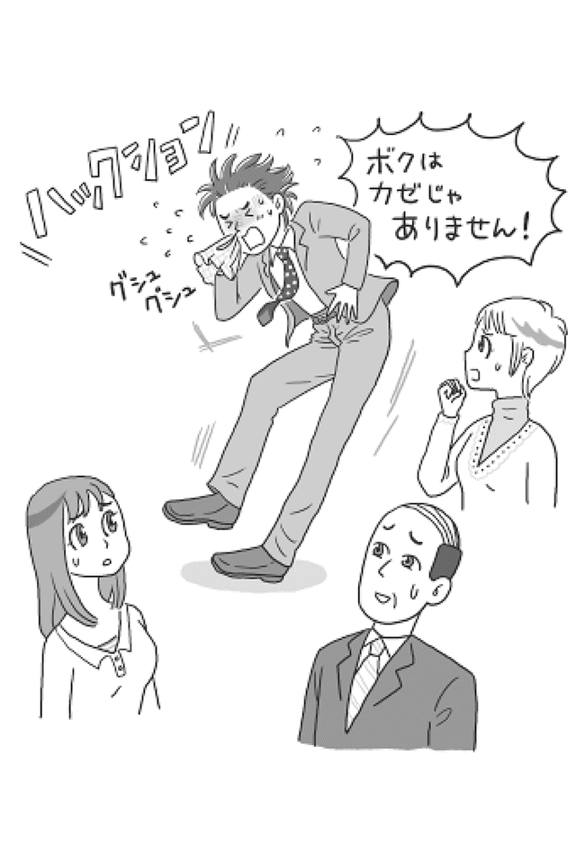
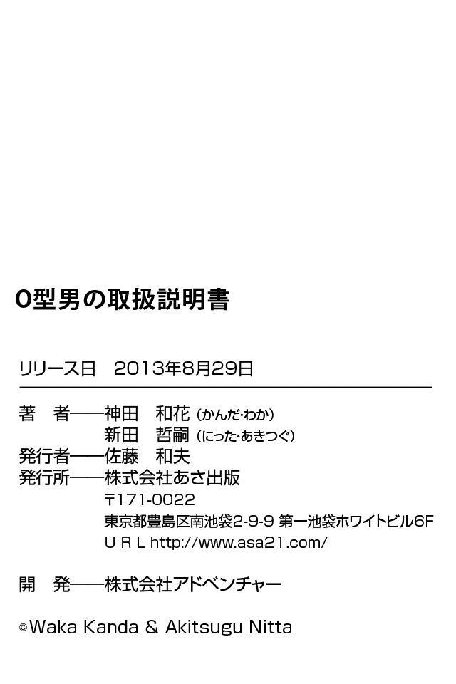

| Ｏ型男の取扱説明書(あさ出版電子書籍) | |
| 神田和花 & 新田哲嗣 | |
| (2013) | |
はじめに
本書を手に取った人の多くは、「Ｏ型男」の男らしいのに女々しくて、かと思えば子どもっぽい言葉や行動に振り回された経験があることでしょう。
「なんとかなる」というＯ型男の言葉を真に受け、信じていたら、単に神頼みをするだけで本人は何もせず、結局尻拭いをする羽目になったり、「好きだ！ 幸せにするよ」と告白してきてくれたその男らしさに惹かれＯＫしたら、なんでもかんでもあなたに任せるだけのぐうたらぶりに「ダマされた！」と腹が立ったりしつつも、常に揺るがない堂々としたあり方、そして度量の大きさや優しさからＯ型男に惹かれる女性は少なくありません。雑誌などの「モテる男ランキング」などに登場するのはＯ型がほとんどです。
実際、Ｏ型男と付き合い、結婚して幸せに暮らしている女性は少なくありません。
ただし、同じくらい苦労している女性もいます。
職場、学校でも愛されキャラなので、友達もたくさんいますが、必ずその陰でＯ型男のフォローに走り回っている人もたくさんいます。
それもこれもＯ型男の最大の特徴である「頑固なのに大ざっぱ」な性格によるもの。
人一倍頑固なＯ型男は、何をするにせよ、まず自身が納得したうえで思うベストな方向へ進めるくせに、物事を時系列に並べて整理したり、心情以外のことで論点を絞り込んだり、予算や締め切りを守ったり、複雑な人間関係を察知したりと細かなことが苦手なため、最後までやりきることができず、逃げてしまう。
それが仕事であろうが、約束したことであろうが、本人はお構いなし。周りの人はたまったものではありません。よって、フォローしなければならないというわけです。
Ｏ型男とうまくやるうえで大事なのは、Ｏ型男のあり方を受け入れたうえで、やる気を起こさせる言葉がけ、接し方をすること。ただ、そのポイントをＯ型男本人ですらわかっていないので、長い目で向き合う忍耐力と、Ｏ型男を信じ、頼ることがカギになります。
もちろん、これだけですべてがうまくいくわけではありません。
本書では、Ｏ型男とうまく付き合っていきたい、もっと彼を男として成長させたいと考える皆さんに、Ｏ型男との接し方が上手な人、つまり「Ｏ型男取扱マスター」になっていただくべく、Ｏ型男の取り扱い方を丹念にお教えいたします。
まずは、「Ｏ型男とはどんな存在か」を知っていただきます。
共感する部分もあれば、想像もしなかった一面を知ることもあるはずです。
続いて「Ｏ型男との接し方」についてお話しします。
即実践できるよう具体的に説明していますので、明日からのヒントにしてください。
Ｏ型男についてある程度知ることができたら、次に「Ｏ型男取扱マスター」になるためのレッスンを施します。Ｏ型男を扱う基本は、Ｏ型男の「やる気スイッチ」を探し、入れてあげること。そうすることで、Ｏ型男は自発的な努力を継続できるようになり、あなたの苦労もぐっと減ります。
なお、ＰＡＲＴ１からＰＡＲＴ３までは、神田和花が執筆担当いたしました。
すべてを読み終えたら、巻末の「Ｏ型男取扱マスター検定試験」に挑戦してみてください。
実生活に即した設問になっていますので、あなたの実力を確認できる一方、とっさのときに対応できる実践力を身につけることができるでしょう。
この「Ｏ型男取扱マスター検定試験」は新田哲嗣が作成しています。
私たちは私たちなりに、Ｏ型男とＯ型男の伴侶として生きる女性をはじめ、Ｏ型男を支えるすべての人に対する敬意と愛情を込めて執筆いたしました。
こっそり読んでいただいたうえで、優秀な「Ｏ型男取扱マスター」となり、現場で生かしていただいても結構ですし、Ｏ型男と一緒に楽しく読んでいただいても結構です。
この本をきっかけに、多くのＯ型男とその周囲の人たちが幸せになってくれることを願ってやみません。
２０１３年１月
神田和花
新田哲嗣
惚れた女のためなら死ねると本気で信じている
Ｏ型男は誰かを幸せにすることで、自分も幸せになることができます。
Ｏ型男は愛する人のためにしたことであれば、どんなに自分に負荷がかかろうと、一切の迷いも後悔もありません。自分のもっている有形無形のものすべてを、惜しみなく相手に差し出します。自ら骨を折って喜 捨 （※１） することで喜 悦 （※２） を味わうのです。
「人を幸せにする」。これこそが人生をかけて取り組むべきことだと、Ｏ型男は本気で信じています（ちなみにＯ型女性も同じ性質をもっています）。
「幸せになりたい」と強く願う女性に、そんなＯ型男に惚れるなというほうがどだいムリな話でしょう。
実際、Ｏ型男は「惚れた女のためなら死ねる」と豪語していますし、何より本人がいちばん信じています。彼女、妻のことをとても大事にしてくれてもいます。
しかし、困ったことにＯ型男にとって幸せにすべき相手は、彼女、妻だけではありません。
喜ばせてあげる相手は、実は誰でもよかったりします。
ときに彼女、妻を差し置いて職場、学校の友人など、身近な人の幸せのために夢中になってしまうことも普通にありえます。
それどころか、偶然出会った人を助けるために大ケガを負ったとしても、Ｏ型男は後悔しないのです。
アンパンでできている自分の顔を、弱っている人、空腹の人に差し出すことで人助けをするアンパンマンをイメージしていただくとよいでしょう。
「相手が元気になるならば」と顔を食べさせてしまった挙句、本人が動けなくなることもしばしば。でも本人はそれで幸せです。
倒れているアンパンマンを仲間が見つけ、ジャムおじさんが新しい顔をつくって仲間が胴体のもとに運ぶとようやく復活します。周りにいる者からすると、実に手間がかかる存在です。でも、その一所懸命さが憎めない。
この生き方はだれにも変えられません。
こればっかりは、仕方がないことだと思って、受け入れてしまってください。そのほうが、お互いのためです。
なぜなら、Ｏ型の血液には「世のため人のために生きるべし」というプリンシプル（※３） が生まれながらにセットアップされてしまっているのですから。
だからこそ、「惚れた女のためなら死ねる」のです。
※１【喜捨】......功徳を積むため、あるいは宗教的な戒律にしたがって、金銭や物品を寺社や困っている人に差し出すこと。
※２【喜悦】......心から喜ぶこと。心からの強い喜び。
※３【プリンシプル（principle）】......原則、原理、主義（『大辞林』より）
Ｏ型男はヒーローになるために生まれてきた
Ｏ型男は正義の味方、ヒーローになるために生まれてきました。
そして、本人も心の底からこう望んでいます。古くはウルトラマン、スパイダーマンのように、どうしたら誰かに（もちろん女性にも）本気で必要としてもらえる、本物のヒーローになることができるのか、日々、必死に考えているのです。
お風呂上がりに洗面台の鏡の前に立って、口笛を吹きながら、イメージトレーニングをするのは当たり前。正義の味方やヒーローが悪い奴らを懲らしめ、人々の命を守った後のお決まりのラストシーンも当然含まれます。
「ありがとう、Ｏ型男。素敵だったわ。もうあなたなしでは一日だって生きてはいけない！」
などと、ヒロインに涙ながらに言われるシーンを想像し、恍惚 感に浸りながら、鏡の前でニンマリすることもあれば、子どもたちに尊敬と憧れの眼 差 しで見送られるなか立ち去る自分の姿を想像し、惚れ惚れすることも――。
こう身も蓋 もない言い方をしてしまうと、ちょっと気持ち悪く思うかもしれませんが、あくまでひそかにこっそり行うだけ。一緒にいても実害があるわけではないので、見逃してあげましょう。
このイメージトレーニングのおかげで、私たちの平和が守られているとも言えるのですから。
正義感にあふれ、非合理的な気のよいあんちゃんであるＯ型男の特徴を、より具体的に列挙するとこんな感じです。
●熱いハートがある
●思いやりがある
●高潔なロマンチストとして人を魅了する
●優しすぎるぐらい優しい
●一緒にいると癒 される
●正義感が人一倍強い
●世界平和を心から願っている
●誰かを守るためなら自分より強い相手と戦っても勝てると信じている
●「俺はこだわらない」「俺はなんでもいい」「誰がなんと言おうが絶対に！」が口癖
●物事を時系列に並べて整理したり、予算や締め切りを守ったりするのが苦手
●複雑な人間関係が苦手
●大事な人の期待に応えるため、喜ぶ顔を見るために頑張ることは苦ではない
●悪気なく秘密にすべきことを忘れてしまう
●「ごめん」と「ありがとう」は言えるが、それ以上の日本語は怪しい
●色気がある（抱かれたい男ランキングはＯ型男だらけ！）
●どこででも眠ることができる
●サボリ癖がついたら最後、何もしない
●一気に食べられる丼物が好き。でも、添えられている御新香は嫌い
●お肉が入っている料理は全部贅沢 だと感じる
●ゴルフではホールインワンを狙う
●気がつくと財布から「福澤諭吉」が飛んでいったあと
●未来についてすぐ「絶対」と言う
●惚れた女に刺されるタイプだという自覚がない
いかがですか？
あなたの身近にいるＯ型男のことが思い浮かんだのではないでしょうか？
正義の味方、ヒーローでありたいくせに、面倒なことは苦手。
ハートは熱いものの、もっとも平和ボケするタイプという厄介な生き物。
それがＯ型男です。
まさにアンパンマンなのです。

Ｏ型男には社長が多い
日本の社長はＯ型がいちばん多いことが、あるテレビ番組の調査結果でわかったそうです。
Ｏ型男の男らしさをはじめとした資質を考えると、さほど驚くことでもないでしょう。
とはいえ、当然のことながら全員が社長になるわけでもなく、総理大臣もいれば働かずにヒモのような生活をしている人まで、ピンからキリまで存在します。
大切なのは、あなたの身近なＯ型男が、ピンとキリのどちらに近いか。
Ｏ型男のピンとキリはかなり差があるので、正確に見定めることが必要です。
まさに男の中の男といえる男らしさをもつ、社長になるタイプのＯ型男であればあとは関係をうまく築いていけばよいだけなのですが、男らしさのかけらもない、それどころか女々しいタイプのＯ型男の場合は、そうとう厄介です。
万が一、後者のタイプに惚れてしまうと、あなたはＯ型男となし崩しの泥沼関係に陥り、文字どおり「赤貧洗うがごとく」苦労をし、おんぼろ雑巾のようになり、最後まで一つも報われないなんてこともありえます。
同じ血液型でそこまで違いが出るなんて......と思う人もいるかもしれませんが、これがＯ型男の恐いところです。
なので、いますぐ、あなたは目の前にいるＯ型男がどちらのタイプか確認してください。
見極め方は簡単。次の二つに当てはまるかどうかをチェックするだけです。
●毎日、早起きができるか
●常にキレイ好きか
いかがでしょうか？
たったこれだけと思うかもしれませんが、これほどわかりやすい目安はないのです。
二つとも「○」の場合は、たとえ今、無職だったりバイト生活だったりしても、将来必ず成功します。私が保証します。
早起きができてキレイ好きのＯ型男は誠実で清々しく、「男らしい」うえに、きちんと約束を守ることができるからです。つまり、人として必要なことであり、とても大事なことが自然とできているということ。心配する理由がありません。
もしあなたの愛する人や身近な人がこのタイプなら、あとはチャンスをつかみ損ねないことだけ。ぜひ、この本を参考にＯ型男を愛情でサポートして、二人三脚で幸せになってください。
一方、二つとも「× 」の場合は、たとえ今、あなたの前でカッコつけていても、すぐに女々しくなってきます。
女の面倒を増やすばっかりで、人との約束を守ることができない。なのに、プライドだけは高く、さらに頑固者なので、タチが悪い。成功する要素は何一つありません。
もしあなたの愛する人や身近な人がこのタイプだったときは、できるだけ早く逃げてください。
あなたが苦難を受け入れる覚悟があるなら別ですが、苦労の連続の日々が待ち受けているため、あなた自身がボロボロになる可能性大です。
そして、どちらか一つだけ「○」だった場合、それはあなた次第です。
一つしかできていない時点で、逃げることをオススメしますが、「一つできているのだからＯ型男の頑張りを信じて一緒にいたい」そう思う人もいるかもしれません。その選択をするなら、できていないもう一つのことができるようになるまで、それこそＯ型男にとって習慣になるまで、あなたが導く必要があります。
ただそれは、簡単なことではありません。さらに、時間もかかるでしょう。それでも、あなたにそれだけの覚悟があるなら、Ｏ型男に芽が出る可能性はあります。
実際、昔はダメだったけど、一緒にいてくれた彼女、妻の支えによって、人間的に成長でき、社長になった、社会に貢献できるようになったＯ型男はいます。
ただし、絶対ではありませんので、逃げるという選択肢を必ず検討してくださいね。
キャンプでは完全燃焼
Ａ型男・Ｂ型男・Ｏ型男・ＡＢ型男の四人で近場の渓谷にあるキャンプ場へ行くことになりました。
それぞれ楽しみにしてはいるものの、いちばん心待ちにしているのはＯ型男。
「久しぶりに遊んで遊んで遊びまくるぞ！ 釣りもいいな、花火もいいな」と楽しみで仕方がありません。当日も夜明けとともに出発。
キャンプ道具を車にいっぱい積んで、皆を迎えに行き、開店と同時にスーパーで買い出し、バーベキュー用の肉や野菜、お酒をいっぱい仕入れて、移動の車も当然のように全部運転します。
キャンプ場についても、Ｏ型男のテンションは下がりません。
バンバン火を熾 して、冷たいビールを片手に煙にむせながらお肉をガッツリ焼いて、皆に食べさせるなど、アウトドアのときは、普段とは別人のようにリーダーシップをとって、サービスします。Ｏ型男の大活躍で、四人は大盛り上がり。夜になっても男同士ならではの熱い話も止まることを知りません。
ところが、ふと見るとＯ型男の姿が見えません。
懐中電灯で周りを照らしてみると、近くの岩の上で大の字になって寝ているＯ型男の姿が。すっかり酔っぱらってしまったようで爆睡しています。
Ａ型男「よくもまあ、岩の上で器用に寝ることができるもんだな」
Ｂ型男「たまたまだろ？」
ＡＢ型男「Ｏ型男くんは朝からずっと、一所懸命頑張っていたよね！」
そう言いながら、「お前も頑張っていたよ！」と、どちらかが自分のことを褒めてくれないかなと期待して皆の顔を必死に見渡すＡＢ型男。
Ｂ型男「俺の華麗なフィッシングもかなりの腕前だったよ！」
Ａ型男「キレイにアクをとって隠し味が効いたこのカレーを作ったのは俺だよ！」
ＡＢ型男「......。そ、そうだよね。み、みんな頑張ったもんね......（ガッカリ）」
実はキャンプは、やることがたくさんある分、血液型によって行動が変わるので、人間観察にはもってこいの場所。
参考までにほかのタイプが何をしていたかというと、次のとおりです。
Ａ型男は料理です。野菜を洗って薄く皮を剥き、料理の工程すべてにおいて目を光らせ監督します。基本的に他人が作った料理は不安なので、自分が作るほうが確実だと思っています。
Ｂ型男はというと、皆がバーベキューの準備をしているにもかかわらず、釣竿を持って河原に向かってしまいました。どんな場面でもマイペースなうえにスタンドプレーは絶好調！ というわけです。
ＡＢ型男は、皆とは少し離れた場所でテントやテーブルセットの組み立てに励みます。本人は皆のために良かれと思って必死でやっているのですが、周りからするとすまして見えるので、やりたくてやっているのだと思われがちです。ただし、本人は、この頑張りを誰かが見てくれているはずと信じています（だから、先ほどの発言となるわけです）。
そしてＯ型男はというと、皆が手掛けている以外の仕事をすべて引き受けつつ、三人の間を行ったり来たりしながら、困っていることはないかなど確認して回ります。何かあったときフォローに入るのも、もちろん彼の仕事です。
なので、ちょっとお酒が入っただけでぶっ倒れてしまうくらい、完全燃焼してしまうわけです。
Ｏ型男は頑張っている自分を認めてもらいたいとは考えていません。皆のために頑張って取り組むことが、うれしくて、楽しくて、仕方がない。ただそれだけです。
Ｏ型男は、ハートの熱い純情な男の子なのです。
風邪をひいても認めない
ハックション！ ハックション！
グズ......。ゴホゴホゴホ......。ブー（鼻をかむ音）
どうやら風邪をひいてしまったらしいＯ型男。あまりに豪快なくしゃみ、そしてつらそうな表情を見ていられなくなったあなたが声をかけました。
あなた「Ｏ型男くん！ 風邪大丈夫？」
Ｏ型男「......。グズ......。俺は風邪じゃないっす！ グズ」
あなた「え？ 風邪じゃないの？」
Ｏ型男「ゴホゴホ 風邪なんかひいたことないっすよ」
あなた「？ じゃあ、その状態は何？」
Ｏ型男「......。ちょっと鼻炎なだけっすよ。ゴホゴホ」
あなた（いやいや。鼻炎は咳出ないでしょ）
皆の心配をよそに寒空の下ベンチに座ってタバコに火をつけて吸い始めるＯ型男。直後にますます咳き込んでいるのに、タバコは手放さない。さすが、頑固者です。
Ｏ型男は三九度以上の熱が出ない限り、風邪をひいたことを絶対に認めません。なので、風邪の初期症状が出てもなんの対策もとりません。
病気を認めるのはカッコ悪いこと、さらには、多少のことなら気力で補えると思い込んでいるのです。
そんなＯ型男をおとなしく布団で寝かせて、お粥 を食べさせ、風邪薬を飲ませるのは、至難の業 。なにせ、本人が風邪の罹 患 を認めていないのですから。
したがって、風邪をこじらせることも珍しくなく、最悪、肺炎になって入院なんてこともありえます。
Ｏ型男が風邪をひいているな、具合が悪そうだなと思ったときは、早めに声をかけることです。
ただし、ストレートに言っても聞いてくれません。
あなたのために、もしくは職場・学校の皆のために、「明日はいつもの元気なＯ型男になってほしい」と伝えましょう。
「明日には」と期限をつけたうえで期待を寄せることによって、Ｏ型男のやる気のスイッチが入りやすくなります。
頑固なＯ型男に動いてもらいたいときは、動きたくなる要素を入れ込むのがコツです。

縄張りパトロールを欠かさない
Ｏ型男は一人のとき、自分の縄張りをパトロールします。
いつもの本屋をチェックし、
いつものゴルフショップをチェックし、
いつもの時間に、
いつもの中華料理屋さんに入り、
いつもの天津飯 （など、お気に入りの料理）を注文します。
当然、いつもとまったく同じ味がするわけですが、このときＯ型男は「なんて幸せなのだろう！」と幸せを噛 みしめます。
子どもの頃から食べていたこの天津飯があれば十分。ほかに何もいらない......と。
違う店に行けばもっとおいしい天津飯があるはずです。でも、Ｏ型男には関係ありません。仮に超有名店の天津飯を食べることがあったとしても、それはそれ。
たとえ近所に新しくオープンしたり話題になったりしているお店があっても、足を運ぶことはありません。
もちろん、誰かが行きたいと言えば、喜んで一緒に行ってくれます。ただそれは、相手を喜ばせたいからこその行動であって、自分のためではありません。縄張りで十分満足しているからです。
それだけに、自分の縄張りのパトロールは欠かせません。
休日のたびに、一人の時間ができるたびに、巡回します。そして変化していないことを自分の目で確認し、安心する。それが、Ｏ型男にとって至福の時間となるのです。癒しの時間といってもいいでしょう。
Ｏ型男は誰かを満足させることが大好きであり、なおかつ得意なので、一見フットワークが軽いように思えますが、それはあくまで世を忍ぶ仮の姿。実態は、
極めて狭いエリアの巡回パトロールを繰り返すことに幸せを感じ、変化を求めない生き物なのです。
Ｏ型男の財布は常に空っぽ
Ｏ型男と一つの財布で家計を共にするようになると、その金銭感覚にビックリさせられるでしょう。
決して贅沢はしていないはずなのに、なぜか、出費に対して収入が追いつかないキャッシュフローになるからです。
読売巨人軍終身名誉監督である長嶋茂雄さんの名言に、「わが巨人軍は永久に不滅です」という言葉がありますが、そのお言葉を拝借して、こう断言します。
「Ｏ型男のキャッシュフローは今月も（恐らく永久に）破綻です」
Ｏ型男は、バイトや派遣社員、低所得層の会社員だけでなく、そこそこ高額な給料をもらえる会社員であっても、長者番付に載るような超高収入の芸能人やスポーツ選手、社長であっても、キャッシュフローが火の車になる傾向があります。
働けど働けど、財布にお金が残らない。
もちろん、銀行口座も残高がギリギリ。
投資（金融商品）も定期預金も期待できません。
結婚相談所や婚活パーティーなどでは年収を申告しなければならないようですが、Ｏ型男の場合、年収だけを聞いてもまったく役に立ちません。一緒に、預金残高と財布の中身を聞かなければ、その実態は見えないからです。
もしそこで、キャッシュフローが火の車状態になっていないＯ型男に出会えたとしたら、それこそ宝くじで一等に当たったようなもの。次はないと思ったほうがいいでしょう。
なぜ、そんなことになってしまうのか。
それは、生まれながらにＯ型男がもっている偉大なポリシーによるもの。Ｏ型男がビッグになるために避けて通れない運命ともいえるでしょう。
お金がなくなるＯ型男の偉大なポリシー10 箇条を見ればわかるとおり、Ｏ型男のいちばんの魅力の一つである〝でっかい器〟がその要因になってしまっているのです。
そのでっかい器を空っぽにするのか、中身いっぱいにするのか、それは、あなたの力量にかかってきます。
言い方を変えると、どんなにキャッシュフローが厳しくとも、二人で乗り越えていくことができれば、そんじょそこらの男とは桁違いのスケールの大きな「ビッグマン」に成長する可能性を、Ｏ型男は秘めているということ。
どうですか？ ワクワクしてきませんか？
ただし、「ビッグマン」になれるのはほんの一握りです。
はっきり言って、簡単なことではありません。
様々な試練を通り抜け、ビッグマンに必要な要素を手に入れ、痛みも伴いながら、少しずつ成長してたどり着く場所。それはまるで、カニやエビが脱皮を繰り返すことで、頑丈な躯 体 を手に入れ、成長していくしかないという宿命を背負っているのによく似ています。
そのゆるやかで果てしない時間に付き合えるか、それはあなた次第です。
ただいずれにしろ、形はどうあれお金に苦労することは間違いありません。
できるだけ早いうちに、Ｏ型男のキャッシュフローを把握し、キャッシュフローの破たんを避ける方向に誘導してあげることが必要です。
くどいようですが、破たんしていて当たり前という生き物なのですから。
お金に苦労したくないあなた、逃げるなら今のうちですよ。
Ｏ型男はちょっとおブスな女子が好き
気高い美人や上品なお嬢様を見て「美しい」と思う。そんなの男なら当たり前のことです。
しかし、好みの女性かと聞かれるといまいちピンとこない。
いたって単純な思考回路の持ち主であるＯ型男は、恋愛の仕方もとっても単純。
ファッション誌でもなく青年誌でもなく、『週刊 ヤングジャンプ』（集英社刊）など、青年向けマンガ雑誌のグラビアに出てくるような、どこにでもいるような平凡な女の子にエロティックな魅力を感じます。平凡であるがゆえにリアルな生々しさと味わい深さがあるようです。
平凡な髪型で、平凡な背格好で、平凡な服装。
平凡な制服の女子高生、平凡な女子大生、平凡なＯＬ。
美人かブスかと聞かれれば「ちょっとおブス」。つまり、中の下クラス。
Ｏ型男からすると、そんな女性がいいのです。
もし、Ｏ型男との距離が思うように縮まらないことに悩んでいるのなら、Ｏ型男と会うときのあなたが頑張りすぎている可能性があります。
流行りの服に髪型、飾られたネイルにバッチリメイク......。
好きな男性、狙っている男性に会うとなれば、どれも女性として当たり前のことですが、Ｏ型男に限っては、洗練されたバッチリオシャレである必要はありません。むしろ逆効果。
近寄りがたい雰囲気、気を遣わなければならない女性は苦手ですし、恋愛対象外だからです。
Ｏ型男にとって、女性の魅力はなにより親しみやすさ。
普段の生活の中で見慣れている雰囲気の女性に魅力を感じ、見るたびに愛情を深め、見飽きるほど見慣れた頃ですら魅力を感じてくれるという、女性にとっては優しくありがたい存在、それがＯ型男であり、モテる理由なのです。
だからといって、あなたがもし美人であっても、心配する必要はありません。あなたの顔をＯ型男に見慣れてもらえばいいだけです。くれぐれも美容整形してブスになろうとするなど極端な方法はとらないでくださいね。
平凡な子は平凡な発想しかしませんから、そんなどでかいことをやってしまうと、かえってＯ型男から警戒されてしまいます。
Ｏ型男に愛される秘訣は、いたって普通に、親しみやすさを感じてもらえる様相であり続けること。
Ｏ型男は自分に相応しい、ほどよい女性が好きなのです。
愚痴や弱音を聞いてくれる
つらいことや腹が立つことがあったとき、誰かに話を聞いてほしくなりますよね。
そんなときは、Ｏ型男の携帯にメールをすればＯＫ。30 分もしないうちに「どうした？」と心配の電話をかけてきてくれるでしょう。
そして、嫌な顔一つせず、ひたすら愚痴や弱音を聞いてくれます。
あなたが現在の彼女でなくても大丈夫です。それこそ元カレ・元カノの間柄だったとしても友人、同僚だったとしても関係ありません。
よくも悪くもＯ型男とあなたが存命している限り生涯にわたって続く、永久保証付きサービスといってもいいでしょう。
さらに驚きなのが、Ｏ型男がそのことを苦痛に思っていないこと。優しく穏やかに、こちらの話を邪魔することなく、聞いてくれるのです。
Ｏ型男と一緒にいることの最大の魅力と言ってもいいでしょう。
実際、Ａ型男は女性の話を聞かないわけではないのですが、途中から頼んでもないのに冷静に分析して、求めていないのにアドバイスをしようとします。聞いてもらわないほうが無難です。
Ｂ型男は、落ち込んでいる人と話すのが大嫌い。話を聞いてもらおうと電話をしても、折り返しの連絡すらありませんし、偶然会っても素っ気なくされる可能性大。思いやりが決定的に足りないＢ型男に愚痴っても、さらにへこむだけなのでやめましょう。
ＡＢ型男は意外にも話を聞いてくれるだけでなく、叱咤激励してくれるのですが、ＡＢ型男はその見返りを求めてくるため、はっきり言ってうっとうしいことになるのは目に見えています。ＡＢ型男に愚痴ったが最後、気力も体力ももちこたえられません。絶対に避けましょう。
Ｏ型男は、あなたが誰にも言えない愚痴や弱音をとめどなく吐き続けても、途中で話を遮 ることなくあなたの話を聞き、すべてを受け止め同意してくれます。そして最後にひと言、「そうなんだ。でも○○ちゃんならできるよ！」と励ましてくれます。なんのムダもありません。
その優しさは、魔法の精神安定剤。
あなたはＯ型男の優しさと包容力に支えられて、今を乗り越え、明日も頑張ることができるはずです。
＊＊＊
さて、Ｏ型男の性質、いかがでしたか？
頑固者で、お金もない、それでも深い優しさから多くの人に愛され、そして多くの仲間を愛するのがＯ型男。まずは、その性質を受け入れてしまいましょう。
続くＰＡＲＴ２では、より具体的にＯ型男との接し方についてお話しします。
「なんでもいいよ」は禁句！
Ｏ型男から「どうしよっか？」と聞かれたときに、「なんでもいいよ」と返すのは危険です。
あなたとしては、女性らしく男性を立てたつもりかもしれませんが、大間違い。
たったそのひと言で、Ｏ型男のテンションはダダ下がり。最悪、デートが中止になってしまうこともありえます。
Ｏ型男が「どうしよっか？」と切り出してきたときは、
「なんでも言って。君のためなら、俺、なんでもやるからさ（ワクワク）」
と、超張り切っています。
Ｏ型男「どうしよっか？（今日は何をしてあなたに喜んでもらおうかな）」
あなた「なんでもいいよ」
Ｏ型男「マジでどうする？ 俺もなんでもいいよ！（ホラホラ言ってごらん♪）」
あなた「私もなんでもいいよ」
Ｏ型男「......（やる気スイッチオフ）」
Ｏ型男はよかれと思ってあなたに「どうしよっか？」と聞いたのです。
すべてはあなたの喜んでいる笑顔を見たい......、たったそれだけのために。
「どうしよっか？」は、優しいＯ型男ならではの包容力の表れなのです。
なので、Ｏ型男が「どうしよっか？」と切り出してきたときは、素直にしたいことを伝えましょう。多少のワガママはＯＫです。というか、むしろそのほうが、Ｏ型男は喜びます。
ちなみに、血液型によって「どうする？」の意味が変わってきます。
Ａ型男の「どうする？」は、相手の様子をうかがうためのもの。あなたがどんな要望やニーズを持っているのかを冷静に観察するプロファイリング機能として使います。
Ｂ型男の「どうする？」は形ばかり。一応聞いてみただけであって、答えは求めていません。それどころか、聞いたときにはすでにどうするつもりなのか彼の中でガッチリ決まっています。
ＡＢ型男に至っては、基本的に「どうする？」なんて言ってくれません。聞くこともしなければ、何か意見を言うでもなく、黙々と歩いて行くだけ......。「こっちに行こうよ！」と言ってもらえるのを待っています。そんなＡＢ型男の口から「どうする？」の言葉が出たときは、「早く決めて」という催促の意。とりあえず、なんか言ってあげることです。
「どうする？」の落とし穴にはまらないよう、とっとと結論を出してあげましょう。
存在意義というニンジンを与え続ける
Ｏ型男は自分の存在価値を大喝采 で認めてもらいたいと思っています。
就職活動のときですら、自分を必要としてくれる企業を求めて彷徨 います。
当然ながら、そんな甘いことなどありえませんから、Ｏ型男は時が経つにつれ、やる気がどんどんなくなり、スイッチがオフになっているのを隠そうともしません。
周囲がどんなに叱咤激励しようが、脅迫しようが、激高しようが、はっぱをかけようが変わりません。それどころか、そのまま、就職活動をやめてしまうことも少なくありません。
実は、フリーター、ニート、ヒモになってしまう人が多いのも、Ｏ型男の特徴です。
一年や二年だったらまだしも、長いと十年を超えることも。それは決して珍しいことではありません。
就職活動から逃げ回るＯ型男はまるでかの武将 武田信玄の「風林火山」の格言そのものです。
逃げ回ること風の如し
沈黙すること林の如し
怒られること火の如し
動かざること山の如し
就職活動期間が長引けば長引くほど（といってもほんの数カ月の話です）、Ｏ型男のテンションは下がり、どんどんダメダメになっていきます。
勘違いしないでほしいのですが、Ｏ型男は働きたくないわけではないのです。
企業から電話がかかってきて
「Ｏ型男さん、あなたの力を貸してください。ぜひとも、うちの会社の仕事を手伝っていただきたいのです。片道の交通費は前金でお振込みいたします」
などと言われた日には、命をかけて働こうとします。その日のうちにすっ飛んで行くことでしょう。
「私にはあなたが必要なの」
まるでプロポーズのような甘い言葉。
でも、下がり切ってしまったやる気スイッチを再度入れてＯ型男を動かすには最高です。
Ｏ型男は目の前にニンジンをぶら下げないとやる気が起きない生き物。
ニンジンは「自分を必要として心から感謝してくれる人のため」という、Ｏ型男の最大にして究極の目的を実現できるものであればなんでもＯＫ。
やるべきことなのに、Ｏ型男のモチベーションが下がっているなと思ったときは、すかさず「存在意義アリ」というニンジンを目の前に差し出しましょう。
「きっと、あの会社も、Ｏ型男君と一緒に仕事したいと思っているよ」
など、他者の弁もうまく使えば、Ｏ型男が逃げ出しがちなことでもうまく向き合わせることができます。
「あなたのおかげで皆が幸せになれる」と伝える
Ｏ型男が就職活動を苦手とする理由には、もう一つ大きな要因があります。それは、
「お金（生活）のために働く」ことの意味がわからない。
「商売上手なビジネスマン」と「金の亡者の卑怯者」の違いを理解することができないため、割り切って判断ができません。そのために、ちょっとでも苦になることがあると、面接に行かなくなってしまうこともザラ。
ほんとに厄介です！
周囲が何を言おうが、本人が納得できないことはできない。
「お金のために人をダマしたくない。それは卑怯者のすることだ」と思ったら、就職（活動）自体をやめてしまいます。そして、近くの飲食店などで、バイトを始める。Ｏ型男にとって、これがいちばん自然な行動なのです。
とはいえ、一緒にいる者にとってはたまりません。ゆゆしき問題です。
こんなときは、先ほどのニンジンのアレンジで対応しましょう。
あなたがお金を稼ぐことによって、あなたにとって大事な人たちを幸せにすることができる、それが「仕事」であると、伝えるのです。
ひいては、まだ見ぬお客さま、会社の仲間たちも幸せにできるなど、Ｏ型男が目指す生き方に寄せて仕事について説明する、つまり、その仕事をするのは世のため人のためであると気づかせるのです。
仕事こそが自身の生きる目的であり、役目なのだと理解したとたん、Ｏ型男は仕事、働くということに対して前向きになり、やる気スイッチが入ります。
元来、正義感が強くヒーロー体質なので、仕事は自分のお金のためではなく、世の人のためにすべきことだと認識したが最後、やらない理由がありません。
ただし、気をつけないと、大変な目に遭うことも。
元来、「世のため人のため」のＯ型男だけに、お客さまに肩入れしすぎてしまうという、新たな事態が起き始めてしまうのです。
お客さまから聞かれもしていないのに、よかれと思って売上や原価率など、部外秘の情報をお話ししてしまうなんてことも考えられます。
たとえばこんなふうにです。
お得意さま「おお、兄ちゃん！ 今日も焼き鳥最高においしいね！ ところでミニトマトのベーコン巻きはまだある？」
Ｏ型男の店主「ありません。ミニトマトとベーコンは原価率が高く、出せなくなったのです」
お得意さま「......（絶句）。なぜそれを言うかな～（呆）。どのみち１００円か２００円の話だろ？」
Ｏ型男の店主「たしか、ミニトマトが○○円で、ベーコンは× × 円換算ですね」
Ｏ型男は、「よかれ」と思って話したのですが、お得意さまからするとお酒の酔いがさめる話。
「人気商品なので売り切れました！」と嘘をつかれたほうが、よっぽどお客さまを喜ばせることになるというのが、Ｏ型男にはわからないのです。
なので、Ｏ型男に仕事を頑張ってもらいたいなら、細かくその役割と行動を説明してあげてください。
なぜ、原価率の話をお客さまにすると、興ざめされてしまうのか、お客さまの決断だけが正しいわけではないのはなぜかなど、丁寧に教えてあげましょう。でないと、せっかく目覚めた仕事熱なのに、小さな失敗の積み重ねで消してしまうことになります。
そして最後に「これはあなただからこそできることね♥」とひと言添えてあげましょう。そのひと言で、Ｏ型男のやる気が大きく変わります。
ぜひ活用してくださいね。
Ｏ型男とケンカをしてしまったときは
Ｏ型男は、ほかの血液型の男性たちと比べるとケンカになる機会は少ないでしょう。
それは、Ｏ型男の基本的性格が、相手のすべてを受け入れ、その意向に合わせるスタイルだからです。
さらに怒ることも苦手で、「ムカッ」としても、それを表に出さないので、なかなかモメごとに発展しません。
そんなＯ型男とケンカになるのは、Ｏ型男の苦手分野であるお金に関すること、そして、おおらかさゆえのいい加減さが原因であることがほとんど。
たとえば、携帯電話の支払いを忘れていて止められてしまったので、あなたが肩代わりをせざるをえなくなったとか（それも何度も！）、「やる」と言ったことをまったくやらないなど（これまた何度も！）、（借金はあっても）お金がないのに女性がいるお店に男友達と通いさらにお金をムダ使いするなど、早い時点で「落とし前」をつけてもらうことが必要なことばかりです。
ところが、愚痴や不満も含めて人の話を聞いてくれるという優しさがある一方で、自分に関する人の話の内容まではちゃんと聞かないのもまたＯ型男。
話をしたからといってもすぐ直るわけではありません。おそらく近い将来、また同じことをしでかすでしょう。
Ｏ型男とのケンカは、二人の絆を深めるための大事なイベント。
そのときは、しっかり怒ってＯＫ。腹が立ったならガマンする必要はありません。
感情をぶつけるだけはＮＧですが、言うべきことを言い、伝えるべきことを伝えましょう。
なぜなら、Ｏ型男は悪気があってやらないわけではなく、ただ、言われたことを忘れてしまっているだけだからです。
Ｏ型男は子どもと一緒。
何度も繰り返すことで、できるようになります。それまで、ちょっと時間はかかりますが、付き合ってあげましょう。
ちなみに、自分に関することではほとんど怒らないＯ型男ですが、大事な人、身内や仲間が大変な目に遭ったり、困っていたり、はたまた無理をしすぎていたり、頑張りすぎていたりすると、怒り出します。
おだやかなＯ型男が本気で怒るのは必ず、あなたのことを心配してイライラしたときです。
Ｏ型男の機嫌が明らかに悪くなったり、ムスっとした顔で黙りこくって何も言わなくなったり、突然「いい加減にしろよ！」と怒鳴られたりしたときは、Ｏ型男に何が起こったのかをあれこれ考えるのではなく、まずあなた自身のこと、Ｏ型男に心配をかけるようなことをしていないかを振り返ってみましょう。
そして、思い当たることがあれば、ただちに反省し、素直に謝ること。
次のひと言が、仲直りのカギになります。
「心配かけてごめんなさい。これから気をつけます。自分自身のことも大事にします」
Ｏ型男はあなたが気づいてくれたことで満足し、いつもの穏やかな笑顔に戻ります。
Ｏ型男はあなたのことを自分のこと以上に思っています。そのことは、忘れないであげてくださいね。
Ｏ型男とのケンカは、二人の絆を深める大事なイベント。お互いの気持ちをしっかり伝えあいましょう。
説得するときは女の勘が有効
Ｏ型男は女の勘を敬い、尊び、ときに感謝してくれます。
Ｏ型男には、日本男児には珍しく、女性を尊敬し、また女の勘を信じることができる、男として素晴らしいプライオリティがあるからです。
ちなみにＢ型男は、「女の勘などと、都合よく根拠のない話をしやがって」と、あきれ怒り出すのがオチです。
Ａ型男は、「女の勘て、なんだよ」と混乱し、口がパクパクします。同時に、あなたを言いくるめる論理を検索し、徹底的にぶつかってきます。
ＡＢ型男はというと、「女の勘？ 女の勘はすべて正しいのか？」と理解できず、そんな自分が嫌で既に心は泣いています。でも、結局受け入れることはしません。
一方、Ｏ型男はというと、真顔で聞いてくれ、「わかった！」とひと言。
女の勘という、なんの根拠もないようなことであるにもかかわらず、あなたの言葉を信じ、ガッツリ受け止めてくれます。
自分が信頼している相手ならなおさらです。
反対にあなたも「女の勘」で何か思うことがあるのであれば、常にＯ型男に伝え、彼をサポートしてあげましょう。
たとえば、何か不穏そうな頼まれごとをＯ型男が引き受けようとしているなら、「それ、なんか嫌な予感がする！ 断ったほうがいいと思うな」と囁 いて、Ｏ型男が不穏なものに巻き込まれないよう、仕向けるのです。
Ｏ型男は誰かに何かを頼まれると、自分が人の役に立てることがうれしくて、内容をよく考えずに、二つ返事で引き受けてしまい後悔するタイプ。
さらに頼まれごとを断るのも苦手です。自分を頼ってくれた人をガッカリさせたくないうえに鈍感なので、断るチャンスがあっても逃してしまうことがあります。
そんなときは、
「私なぜだか嫌な予感がするの！ 女の勘で、そう思う！ 今回は絶対に引き受けたらダメよ！ 断って！ 私はあなたを守らなければならないわ」
と、言えば必ずやＯ型男は納得してくれます。
このセリフは頑固なＯ型男を納得させるのに大変効果的。
でもさすがに連発してしまっては、効果が薄れます。
乱発は厳禁！ ここいちばんというタイミングで使いましょう。
「女の勘」をフル活用して、Ｏ型男のピンチを事前に回避することで、Ｏ型男はあなたに対して心の底から感謝します。
そして一生手放せなくなるでしょう！
子ども扱いをしてはいけない
Ｏ型男は本気で正義の味方、ヒーローになりたいと思っています。
なので、歳を重ねたある時、自分が満足できるようなヒーローになれない（狭き門であり）、さらには生きていくのもなかなか厳しい（給料もよくない）職業だということを思い知ると、しばらく苦しみます。
理想と現実のギャップを埋めるべく、子どもがえりすることも。モラトリアム（「社会的責任を負った大人になることをあえて踏み留まろうとする青年」もしくは「大人になるのを拒む青年心理」などといった意味合い）な青年期を過ごします。
Ｏ型男には様々なモラトリアム区分がありますが、大きく分けると次の三つです。
●「旅人」「自分探し」「フリーター」「ヒモ」など（「大人になりたくない」をわかりやすくアピール）
●「少年野球チームのコーチ」といったほぼ週末しか出番がない仕事（でも、一応、人にものを教える立場）
●ほとんど活動していない「ダンサー」「バンドマン」「フォトグラファー」などといった華やかなカタカナ職業のタマゴ（修行中。とはいえ夢をかなえるためという大義名分あり）
いかがでしょうか？
「つまらない大人になりたくない」という思いが、あまりにもわかりやすくて、驚いたのではないでしょうか。
実は困ったことに、この状態に陥ったＯ型男は、交際中の女性を職場まで迎えに行ったり、ご飯を作っていてくれたりなど、どんどん優しく親切になっていきます。Ｏ型男自身が実社会に身の置き場がない分、あなたにとっての存在価値を上げようとするためです。
実際、仕事に熱中している男性よりモラトリアムなＯ型男のほうが扱いやすいうえに、スケジュールも気分も合わせてくれるし、荷物も持ってくれて「まともな男」よりもよっぽど協調性や親切心があります。愛情も感じられるでしょう。
ただし、あなたが受け入れれば受け入れるほど、Ｏ型男はどんどんモラトリアム状態に居心地のよさを見つけてしまい、社会復帰から遠ざかるばかりです。
Ｏ型男は面倒くさがり屋なので、どんどんラクなほうに行ってしまいます。気づいたときには戻ってこられないところまで行ってしまう人もいます。
Ｏ型男がこの状態になってしまったときは、
「そんな暇があったら早く就職して、天下国家のために働いてください」
とハッキリキッパリ断って、頼みごとをしたり喜んだりしないことが大切です。
一人の大人の男として、あることを求め、大人の男として接する。この姿勢を絶対に忘れないでください。
Ｏ型男が落ち込んでいるときは
Ｏ型男は、ちょっとした言葉や行為で、猛烈に落ち込むことがあります。
プライドが傷ついた、カチンときたけど言い返せなかったなど、理由は様々なうえに、思いもしないところでドサッと落ちるので、気づくのに遅れることもしばしば。
しかも、皆で一緒にいるときであっても「えっ？ そんなに 」というレベルまで落ちていきます。根幹が子どもですから、そうなるとタチが悪いったらありゃしません。このＯ型男の落ち込みは要注意です。
」というレベルまで落ちていきます。根幹が子どもですから、そうなるとタチが悪いったらありゃしません。このＯ型男の落ち込みは要注意です。
落ち込んでいるＯ型男を立ち直らせる、とっておきの方法があります。
それは、Ｏ型男取扱マスターの真 摯 な愛情サポートと『週刊 少年ジャンプ』（集英社刊。以下『少年ジャンプ』）です。
Ｏ型男は落ち込むと、そのことだけでなく、すべてをあきらめてしまい、なんにもしなくなります。
あれだけ話を聞いてくれたのに、あなたがいくら話しかけても生返事しか返してこなくなります。
こんなＯ型男に必要なのが、『少年ジャンプ』なのです。
『少年ジャンプ』のストーリーには、落ち込んだＯ型男を回復させる三つの要素が詰まっています。
●冒険したい、挑戦したいと思う設定
●友との友情
●勇気を出せば勝利が約束
先ほど、Ｏ型男は「誰かのため」がプリンシプルだとお話ししましたが、そのプリンシプルを炭水化物、いわゆる熱を生み出す栄養だとすれば、『少年ジャンプ』はまさに「アミノ酸系回復サプリ」。女性からすると理解できないでしょうが、Ｏ型男にとっては心の回復効果があり、やる気スイッチがオンになるのです。
普段、マンガなんて読まないＯ型男が相手の場合でも、効果てきめんです。
ただ、普段『少年ジャンプ』どころかマンガ自体を読んでいない人に読んでもらうには、ひと工夫必要です。
「ちょっと付き合って！」と言ってマンガ喫茶に引っ張り込むのも手ですが、普段、マンガを読まないだけに断られる可能性大。
だったら、朱色のカウンターがあるだけで一年中テレビがつけっぱなしの古びたラーメン屋さんや、今時レトロなクルクル回る看板が店先に置いてあるような商店街にある床屋さんなどへＯ型男を連れて行くほうが確実かもしれません。
そこで、一緒に読むなどのきっかけをつくれば、あとは見守るだけでＯＫ。読み終わったときには、すっかり元気を取り戻していることでしょう！
友達の前ではメンツを絶対に潰してはいけない
Ｏ型男はその性格からたくさんの友人に恵まれます。
さらに、一度でも仲間だと思った人を決して裏切らないので、仲間が増えることがあっても減ることはほとんどありません。
「友人の友人に悪い人はいない」というポリシーから、仲間から紹介された人は、出会ったばかりでもすぐに友達になります。
そのため、交友関係が扇のように広がります。
また、友人たちもＯ型男が大好き。おおらかで寛容な姿勢、また正義感の強さが頼りにされ、信用されるからです。
そんなＯ型男ですが、実は人の顔と名前を覚えるのが得意ではありません。
「なべちゃんがさぁ......」などと言われても、どこの「なべちゃん」なのかがわからず、適当に聞き流します。ひどいときは、男か女かもわからないなんてことも。
Ｏ型男にとって、交友関係を整え、相関図をつくったり、更新したりすることは技術的にもメンタル的にも不可能に近いので、元から放棄しています。実は、友達が多いのか少ないのかも、本人がいちばんわかっていなかったりします。
したがって、いつ、どこで会い、どんなことをしたのか、話をしたのかも記憶していないなんてことは当たり前。そのことを、知っておかないと後から驚かされるでしょう。
生まれつき、面倒くさがりだったりもするので、結局は親友と呼べる数人としか、自分からは連絡をとっていないなんてことも珍しくありません。そのため、悪ガキだった頃や、やんちゃだった頃、部活に明け暮れた青春の頃の「過去の思い出話」を、壊れたレコードのように何回も何回も聴かされ続けることはザラです。ですが絶対に、どんなに飽き飽きしていたとしても、「その話は聞いた！」とＯ型男の仲間や親友の前で言ってはいけません。
Ｏ型男は仲間と過去について語り合っているときに、それを思い出して笑ったり懐かしんだりすることで、仲間と連帯感をもつことが大好きです。
それをあなたがぶち壊す権利はありません。
共感はしなくても、ニコニコ楽しそうに聞いてあげましょう。そうすることで、Ｏ型男のメンツも立てることができますし、Ｏ型男の仲間全員があなたを「よい彼女」だと思って歓迎してくれるはずです。
Ｏ型男の特徴として、見ず知らずの女性といきなりお付き合いを始めることはありません。短期間でも友人関係が成り立った（Ｏ型男が認識できるレベルで）女性と付き合います。
さらに、自分の友達から彼女がどう見られるかも、実は結構チェックしています。
したがって、Ｏ型男とまずは友人関係を築き、仲間に入ることが必要です。そのためにもＯ型男が仲間と交わす昔の武勇伝はきちんと聞くこと。これだけは、絶対に守ってください。
友達の前でメンツをつぶしたら最後、あなたとＯ型男との未来はないでしょう。
＊＊＊
さて、Ｏ型男への接し方、いかがでしたか？
これまでいったいどうすればいいの？ と迷ったり失敗したりしていたシチュエーションもあったのではないでしょうか？ 今後はうまく活用して乗り切ってくださいね。
続くＰＡＲＴ３では、Ｏ型男とうまく付き合えるようになる方法（「Ｏ型男取扱マスター」になるレッスン）についてお話ししていきます。
立派なＯ型男取扱マスターになるには
Ｏ型男は生まれながらに〝でっかい器 〟を持っています。その器をどう使うかで、Ｏ型男の生き方は大きく変わります。
誤った使い方をすると、Ｏ型男だけでなく周りの人々も苦労し、苦悩する日々に。
これぞＯ型男！ というような使い方をすれば、Ｏ型男もそして周りの人々もハッピーになります。
つまり、Ｏ型男をうまく先導して〝でっかい器〟の正しい使い方を指導し、心の中にある〝やる気スイッチ〟をＯＮにする。これが、
Ｏ型男との幸福な関係をつくるための唯一の方法、と理解してください。
ＰＡＲＴ１で「Ｏ型男は正義の味方、ヒーローである」と書きました。特定の誰かのためではなく、皆のために生きることで、大きな器を本物にすることができます。
ところがＯ型男は、自分がもっと人の役に立つ人間になるためのスキルアップに取り組むことが苦手で、つい、目の前にいる家族や友人、好きになった女性など、ごく身近な人に尽くすことにやり甲斐を見出してしまい、社会に出て男として何かを成し遂げてやろうといった目標を掲げることを忘れてしまいがちです。
ビッグマンになれる力量を持っているのに、そのチャンスを手にするよりも、身近な人に親切に優しく尽くすことがＯ型男自身の喜びであり、幸せを感じるからです。
でもそれでは、Ｏ型男の生まれ持つ可能性を活かすことはできません。
心からＯ型男がやる気を出し、ビッグマンになり、そしてあなた自身も共に幸せであるために、「Ｏ型男取扱マスター」として成長することが求められます。
あなたが、Ｏ型男のでっかい器を本物にする羅針盤となるのです。
Ｏ型男のやる気スイッチを入れるために、どんなプロセスでアプローチしたら効果的なのか、二人で目標を実現させていけるのか、その具体的な方法を「Ｏ型男取扱マスター」になるためのレッスンとして、ＰＡＲＴ３では紹介していきます。
Ｌｅｓｓｏｎ01 的確にリードする
Ｏ型男は、常に誰かのために行動するのですが、大ざっぱな性格なので、物事の分析が甘く、たいてい周りの意見に安易に付和雷同してしまうのがオチです。
「なるほど！ たしかにそうだな。そうなったらいいよな。うん。きっとそうなる。俺もそう思う。賛成！ 賛成 」
」
「ナニソレ、いい加減......」
とあきれたあなたは、まだまだＯ型男取扱マスターまでの道のりは遠いでしょう。
実はこのやわらかさこそ、Ｏ型男が人々から頼り甲斐があると評される理由なのです。
Ｏ型男は、よほどのことがない限り、大局的なことであっても、ごく些 細 なことであっても、物事を扇動 することはなく、周りの人の意見に合わせる（もしくは合わせた形をとる）ことが極めて上手。相手の話を聞き、尊重したうえで仕事をするため、失敗しても槍玉に挙げられたり、責任を追及されたりすることがほとんどありません。
大企業等でこのバランス感覚を買われ、出世コースを歩むＯ型男も実は多いのです。
これは、恋人同士、夫婦間でも同じことがいえます。
Ｏ型男はあなたの話を聞き、あなたを尊重したうえで行動するため、お互いが気持ちよくいられます。
ただし、あくまで相手に合わせるのが得意なだけなので、リードする役割はあなたです。
常に、あなたがＯ型男を的確にリードして、正しい方向へ導き、扇動することが大切です。「やる気スイッチ」を入れてモチベーションを上手にコントロールさえすれば、Ｏ型男は真っ直ぐ走って行くことができるとっても速いサラブレッドになれます。
ただ、サラブレッドがとても気高いのと同じくＯ型男も男としてのプライドはしっかり持っています。なので、いくらリードする、手 綱 をとるといっても、顎 で使ったり、命令したりするのでは、関係が悪化するだけ。
「いつもありがとう」など、わかりやすい言葉で、礼儀正しく、あなたの存在に感謝していますと、まずは伝えましょう。
そのうえで、細かい部分はしっかり手綱を握ってください。
Ｏ型男の人生も、
Ｏ型男と接するあなたとの関係も、
あなたの幸せも、すべてはあなた次第なのです。
Ｌｅｓｓｏｎ02 平凡な魅力を持ち続ける
Ｏ型男の女性の好みについては先ほどお伝えしましたが、もう一つ、Ｏ型男が女性に求めるものがあります。
Ｏ型男取扱マスターとしての基本姿勢にも関わるところなので、早めにお伝えしておきます。
それは、平凡であること。
Ｏ型男は、女性に華やかさも艶 やかさも求めていません。
穏やかな人生を送るうえで、必要でないからです。
ところが、Ｏ型男と日々過ごしていると、なんだかんだと忙しく、気づくと笑顔がだんだんなくなってしまったり、Ｏ型男に厳しく当たってしまったりなんてことも出てきます。
まるで幼稚園の男の子を育てているママさんのように、表情にも疲れが見え始め、鏡を見て、自分でビックリ！ なんて朝を迎えることもあるかもしれません。
「こんな女に誰がした？」と言いたくなるくらい目に見えてハツラツさが減ってしまうのです。なんだかモチベーションも下がりっぱなしで、毎日をどうにかこなすだけでせいいっぱい、なんてことも......。
Ｏ型男と一緒にいることで幸せであるはずなのに、なぜこんな苦労をしょっているかのような姿になってしまうのか。
それは、あなたがじっとガマンしてしまうから。
ガマンしてガマンして、一人で頑張ってしまうから。
その結果、顔にそれが出てきてしまうのです。
ハッキリ言いましょう。
顔（表情）につらさや苦労をにじませている女性と一緒にいたい男性はいません。
相手の笑顔が見たくて頑張るタイプのＯ型男からすると、なおさらです。「顔に出したら女は終わり」なのです。
では、どうすべきなのか。
それは、苦労話も、身の上話も、愚痴も、怒りも、泣き言も、全部言葉に出してＯ型男にぶつけること。時には泣きじゃくっても構いません。
そうすることで、Ｏ型男取扱マスターとして成長していく過程をＯ型男も見ることができ、なおかつ、あなたが「平凡」な女子であることがアピールできます。
心配しなくても大丈夫です。
どんなに無茶苦茶を言ってもＯ型男は広い心で受け止めてくれます。
なんなら八つ当たりしたって実害はありません。
それどころか、一所懸命頑張るあなたを大いに尊敬し、認め、褒めてくれるでしょう。
反対に、頼ってくれない女性に対し、Ｏ型男は興味を抱きません。
一人で頑張っていることで、Ｏ型男が離れてしまうこともありえます。
Ｏ型男の性格をしっかり把握し、そんな悲しい結末を導くことのないようにしてくださいね。
Ｌｅｓｓｏｎ03 わからないことはその場で聞くように仕向ける
「わからなかったなら言ってよ」
Ｏ型男取扱マスターを目指す人は、人生でいちばん多く口にしているのではないか、そう思うほど、この言葉をＯ型男に向かって言うことになるでしょう。
Ｏ型男は人の話を聞いて、よく理解できないことがあっても、そのまま放置してしまうことがよくあります。
聞かなくてもどうにかなると、考えるからです。
結局、どうにもならず尻拭いしなければならなくなったという構図を、これまで何度も見てきました。
これが尻拭いで済むレベルならいいのですが、この姿勢が改善されない限り、Ｏ型男の成長にスピード感が伴わないばかりか、あなたとＯ型男の関係における肝心なことも、うやむやに放置されてしまいかねません。
一日でも早く、改善策を講じることをオススメします。
Ｏ型男はそんじょそこらの男よりビッグになる器を持って生まれてきています。
ですが、器はあくまでも器であって、そこに何を入れていくか、つまり成長の過程が最後、モノをいいます。
わからないこと、知らないことに対して興味が沸かないということは、物事を知るチャンス、自らが成長するチャンスを逃しているということ。
これでは、ビッグになることはできません。
それどころか、このままでは、悪気はないのに、何もしなかった結果、社会的な信用を失墜 することになってしまう可能性も否めません。
どうすれば、このズボラな癖は直るのか。
その方法は子どものしつけと同じく、言い聞かせがよいでしょう。
まずはＯ型男に、「わからないときは、その場で聞いてね」と、目を見てしっかり伝えます。
と同時に、わからないときに「わからない」ということは、Ｏ型男が誠意をもって生きるということに直結すると、話すのです。
その後は、気がついたらすぐに笑顔で「わからないなら、その場でちゃんと質問してね」と言い続け、Ｏ型男が「聞くこと」が癖になるまで、仕向け続けましょう。
頑固で、面倒くさがりで、ズボラなＯ型男が変化を遂げるのには、長い時間がかかるかもしれません。
それでも、いえ、だからこそ、パートナーであるあなたが事細かに伝え続けてください。
Ｏ型男がなりたい「誰かのために役に立つ男」というのは、これを乗り越えない限り実現しないのですから。
Ｌｅｓｓｏｎ04 「世の中カネだ」と教え込む
Ｏ型男の金銭感覚、経済感覚は、素晴らしくおおらか。
金は天下の回りものだと心から信じているため、家計が苦しくても「今はよそに行っているだけ。いつか回ってくるよ」と気にしません。
カツカツな生活なのに、内訳を見ると交際費や娯楽関係の出費が多かったりします。
さらに、運よくお金が回ってきても「おお、では回さねば！」と、それこそ安易に、すぐに使ってしまいます。それも、自分に使うのではなく、周りの人々のために使ってしまうのですから、本当に困ります。
石川啄木ではないですが、お言葉を拝借して、
「働けど働けど、暮らし豊かになる兆しすらなく」
と、大きな声で嫌味を言ってしまいたくなるかもしれません。
このＯ型男ならではの金銭感覚、はっきり言って本人が努力したとしても直る見込みは期待できません。取扱マスターとして、金銭感覚、経済感覚を身につけてもらうべく、働きかけが必要です。
とはいえ、正面切ってＯ型男にお金の話をしても、まったくもって効果はありません。デリケートな問題だからこそ、元来の頑固さと、女性にあれこれ言われる面倒くささから、「俺は違う」の一点張りで、あなたの話を受け入れることはしないでしょう。
あなたが取扱マスターとしてすべきことは、Ｏ型男自らが、
Ｏ型男「結局、世の中は金なのか？ そして女性も男性に金を求めているのか？」
と聞いてきたら、間髪を容れずに笑顔でうなずくことだけです。
Ｏ型男取扱マスター「そうよ！」
Ｏ型男「どうして、そう言い切れるんだ？」
Ｏ型男取扱マスター「今の世の中、お金がなければ何もできない。彼女に会いに行くにもお金はかかるし、ご飯を食べるにも、プレゼントをするにも、困った彼女を助けるにもお金は必要。
お金を払えなかった会社は倒産するし、給料を払わないような会社で働く人は誰もいないでしょう。
お金がなくて家庭崩壊することなんて珍しくないわ。お金がないと、家族であり続けることも、カップルであり続けることも難しいってこと。家族が病気になったときに命だって落としかねないでしょう。
人を大事にする、人を守るには、きちんとお金を稼ぐことができなきゃ。守るというからには、それが最低限の誠意だし、正義なのよ！」
「崇高な愛や正義感の前では、お金なんて無力。いや、悪の権 化 だっ！」と思っているＯ型男からすると、あなたからの答えは、まさに青天の霹靂 。
多少経済力が足りなくても正義の味方になれると、本気で思っていたＯ型男は、否が応にも自分の甘さを思い知ることになります。
その様子があまりに切なそうで、思わず「お金なんてなくたって、あなたの熱い想いがあれば......」などと、まやかしの言葉をかけてあげたくなるかもしれません。
でもそれは、Ｏ型男のためになりません。
ここはぐぐっと立ち止まり、幸せな将来を実現するため、そして本当の意味で愛する者を守るためにはお金を稼ぎ続け、磐石な経済力を持たなければいけないということを繰り返し伝え続けてください。
「そう思っているのは、お前だけだろ」
などと、時折、男性特有の言い分であなたの意見を否定しようとする輩も出てくるかもしれません。そのときは、
「そう思いたいなら、そう思っていればいいわ。でもね、世の女性はもっとシビアよ。お金がない男性と付き合うことに意味を感じない人ばかりよ」
などと、世の女性はもっとシビアであることをしっかりと伝えきってしまいましょう。
Ｌｅｓｓｏｎ05 ０型男を口説くには？
Ｏ型男を口説くには、まず、Ｏ型男の友人グループの一人になることが先決です。
カップリングパーティーやお見合い、友達紹介など、あらたまった場が苦手なＯ型男は、たとえ婚活をしていたとしても、こういった場所ではなかなか出会いに結び付けられないもの。一方、友人グループであれば、それだけで最初から気を許すことができるので、とんとん拍子で仲が深まる可能性がぐっと上がるのです。
口説きたいＯ型男と出会ったら、彼の交友関係に入り（ハジっこでもＯＫ）、横のつながりを持ちましょう。ここを飛び越えて口説くのは危険です。
ツテというツテをたどって、できるだけＯ型男に近い関係の知り合いをまずつくりましょう。その後、仲間内での飲み会に参加できるように取り計らい、参加してください。なぜなら、
仲間との飲み会後がＯ型男を口説くにはチャンスとなるからです。
方法は次のとおりです。
仲間たちと解散するとき、Ｏ型男の近くに行って、唐突にこう声をかけてください。
あなた「Ｏ型男くん、帰っちゃうの？」
Ｏ型男「......？」
Ｏ型男はちょっと驚くかもしれませんが、そのあとや翌朝に約束が控えていない限りは、ＯＫしてくれるはずです。
あなた「......実は、終電を逃しちゃって......」
Ｏ型男「そうなんだ......。いいよ、帰らないよ」
Ｏ型男にとって、自身の終電がなくなるというのは、それほど気になりません。それどころか、終電を逃して困って自分を頼ってくれたということのほうが一大事。
女性から誘ってきたかどうか、なんてのも気にしません。
なので、ＯＫしたあとは普通のデートと変わりません。
Ｏ型男「どこか行きたいところある？」
などと、優しく聞いてくれるでしょう。
ただし、あなたが気をつけなければならないことが一つだけあります。それは、
Ｏ型男のお財布の中が空っぽかもしれないということ。
お財布の中身について聞ける関係ならば、確認するのがベストです。
それが難しいならば、彼の家、もしくはマンガ喫茶のペアシートなど、安く滞在できる場所がよいでしょう。あなたがお金を持っているなら、ホテルに宿泊するのでもよいですが、はじめからあなたが面倒を見るというのはあまりオススメしません。
このとき、必ずしも肉体関係を持たなければならないことはありません。
Ｏ型男にとって、付き合っていない女性と関係を持つことは、そんなに珍しくはないからです。
ただ、愛情深いところがあるＯ型男は、よほどのことがない限り、一度関係を持った相手は大切にします。ここでぐっと距離感が縮まるのです。
そのあとどう接するかで関係性もぐっと変わってきます。あなたがＯ型男取扱マスターとなり、上手に接することができれば、彼にとって欠かせない存在になるのは時間の問題です。
口説きたいＯ型男がいるのなら、あなたから働きかけること。
必ずや、タイミングさえつかめれば、あとはうまくいくでしょう。
Ｌｅｓｓｏｎ06 家には泊めない
あなたとＯ型男との関係を良好に保つためのポイントは、口説くときをのぞいて、
Ｏ型男が遅くとも終電で家路につくことができるようにすること。
Ｏ型男は面倒くさがりなうえに甘えん坊の部分があるので、
「帰るのが面倒だなあ。○○のところへ泊まって行けばいいや......」
と考え、さらっと実行します。
フローリングにパンツ一枚で横たわってもグッスリ眠れるので、他人の家に泊まることに抵抗を感じないのです。
さらに、Ｏ型男は自宅以外に自分の居場所をつくることがとても上手です。
表面的に協調性が強く、相手の気分を害するようなことは決して言いませんし、頼みごとはよく聞いてくれるし、話も聞いてくれる......。
狭い部屋に長い時間一緒にいても、さほど邪魔くさい存在にはなりません。
そのため、一晩くらいいっかと思ってあなたが泊めてあげると、なぜか翌日も一緒に帰ってきて、また楽しく過ごせてしまい、気づけば「いったい何日目？」みたいな状態に。
これは、Ｏ型男のためにも、そしてＯ型男取扱マスターを目指すあなたのためにもなりません。
自分の家に帰りたくないという時点で、Ｏ型男の〝やる気スイッチ〟はオフになっているからです。
さらに、あなたが面倒を見れば見るほど、目的意識も消失し、ラクなほう、ラクなほうにズルズルと流れ、人としての怠け度合が半端ではなくなってしまいます。
一度流れ落ちてしまったＯ型男を女性の力で引っ張ったり、持ち上げたり、堰 止めたりするのは至難の業。
落ちないようにするしかありません。
したがって、「○○のところへ泊まっていけばいいや......」とＯ型男が言ったときは、毅 然 と「ＮＯ」を表明しましょう。
Ｏ型男とあなたの関係を規律あるものに保つことが、あなたがＯ型男を正しく愛するということに直結します。
それこそが、二人の未来にとって、必要なことなのです。
Ｏ型男と付き合うとき、「なし崩し」はすべて避けてください。
なし崩し的に何か始まってしまったときは、勇気を出して、ストップすること。
でないと、いろいろな負のスパイラルに突入し、修正が難しく痛みを伴うことになり、結果的にあなたが苦労することになります。
どんなに愛しい彼でも家には泊めない。心は痛いかもしれませんが、二人のために徹底してくださいね。
Ｌｅｓｓｏｎ07 時計を片道分進めておく
先ほど、Ｏ型男は家に泊めてはいけないとお話ししました。
ところが、時間管理が苦手なＯ型男は、本当に悪気なく、終電を逃します。
なので、何がなんでも終電に間に合う仕組みを、取扱マスターはつくっておく必要があります。
オススメは、あなたの家からＯ型男が家に帰る際に利用する最寄駅までかかる時間分、あなたの家じゅうの時計を進めておくのです。
たとえば、あなたの家から最寄駅まで14 分かかるとしたら、時計を14 分進めておきます。
そして、終電の時間が近づいたら時計を指さし、
「大変！ もうこんな時間よ！ 終電に間に合わなくなったら大変だわ！」
と大げさに指摘すれば、Ｏ型男はあわてて飛び出します。
大事な人を疑うことをしないので、自分の時計を確認することもせず、言われるがままに帰り支度をし、出発します。
途中一度振り返って、あなたに向かって大きくバイバイしてくれるかもしれませんが（だから憎めない）、またダッシュで駅に向かいます。
さて、しばらくするとあなたの携帯電話が鳴り出します。
駅のホームを駆け上がったらしく、息の上がった声のＯ型男です。
Ｏ型男「俺、俺！ 電車に間に合ったよ！ ありがとう」
Ｏ型男取扱マスター「どういたしまして、間に合ってよかったわ！」
Ｏ型男「そんなことより、ヤバイよ。俺、ヤバイ、マジで......」
Ｏ型男取扱マスター「何？ どうしたの？ 駅で具合が悪くなって倒れている人でも見つけちゃった？」
Ｏ型男「違うよ。俺、めちゃめちゃ足が速くなったみたい！ 大人になっても足って速くなるんだな」
Ｏ型男取扱マスター「？」
何を言っているのか、一瞬ポカンとするあなた。
Ｏ型男「いやあ、まさか、この年齢で足が速くなるとは......。ちょっと感激だな」
Ｏ型男取扱マスター「！」
なんてことでしょう。
時計の針を進めておいた分、彼は自分の足が速くなったと思っているのです。
さすが、単純で憎めない奴です。
Ｏ型男取扱マスター「すごいじゃない！」
Ｏ型男「そうなんだ。次も頑張るぞ！」
Ｏ型男取扱マスター「記録更新できるといいね」
Ｏ型男「おお！」
これ以降、Ｏ型男はよほどのことがない限り、電車で帰ろうとするはずです。
なぜなら、記録を更新して、あなたに報告し、褒めてもらいたい、驚いてもらいたいからです。これは、ほんの一例です。
Ｏ型男取扱マスターの期待に応えたいという強い想いが、Ｏ型男を成長させます。とくに「やればできる」という成功体験は、Ｏ型男の〝やる気スイッチ〟をＯＮにします。
彼が成長する、前進する機会をあなたがＯ型男のためにつくることができるのです。
立派に成長したＯ型男は、あなたにとって唯一無二のパートナーになることでしょう。
Ｌｅｓｓｏｎ08 世話女房になる
Ｏ型男は健康な食生活に対する関心が希薄なため、放っておくとどんどんひどい食生活となっていきます。
もともと面倒くさがりなので、ラクチンな丼物が好きなこともあって、お肉と炭水化物のドカ食いだけで数日生活しても、本人は一向に構いません。
それどころか、食に関心があるわけでもないので、あと一カ月そんな生活が続いたとしても、同じものしか食べていないことに気づかないでしょう。
そんなＯ型男にいくら「健康的な生活をして」「ちゃんと野菜も食べて」と言っても、はっきり言って改善する見込みはないでしょう。
興味がないことには、まったく〝やる気スイッチ〟をＯＮにする気がないからです。
Ｏ型男を一人前にするには、Ｏ型男取扱マスターが、Ｏ型男が苦手としていること、興味がないことに対しても、〝やる気スイッチ〟をＯＮにさせることが必要です。
では、どうすればいいのでしょうか。
相手は単純明快なＯ型男なので、その方法も実にシンプルです。
たったひと言、効果的な小言を言えばいいだけ。
野菜を食べないＯ型男の場合は、こうです。
Ｏ型男取扱マスター「あなた、どうせ野菜炒め食べないわよね？」
Ｏ型男「食べるよ！」
Ｏ型男取扱マスター「カボチャの効用なんてわかんないでしょ？」
Ｏ型男「知ってるよ。食べるんだからそこに置いとけよ！」
そうです。Ｏ型男がカチンときて、つい言い返してしまうようなひと言を振ればいいだけ。負けず嫌いの性格を利用して、勝負を吹っ掛けるかのような言葉で焚 きつけ、まさに「言 質 をとる」わけです。
【言質をとる】（大辞林）
交渉ごとなどで、あとで証拠となるような言葉を相手から引き出すこと
その場のノリと勢いでＯ型男に口約束させるのです。
さすがにノリノリでというわけにはいきませんが、取扱マスターを喜ばせること以上に大事なことなどないＯ型男は、ちゃんと約束を守り（意地になって）食べてくれるようになります。
一見、口うるさい存在のようですが、Ｏ型男には世話女房が必須。
余計な口を出し続けることが、Ｏ型男が生きていくために必要なのです。
Ｌｅｓｓｏｎ09 褒めるも叱るも言い方がすべて
Ｏ型男は他の血液型男と比べ、もっとも寛容な性格です。
ついその寛容さに甘え切ってしまいそうになるのですが、ここに落とし穴があります。
それは、Ｏ型男も「男」であるということ。
そんな当たり前のことを言われても......と、思うかもしれませんが、とても重要なポイントです。
古来より日本では、男性を敬うのが当たり前とされてきました。ところが、現在はその当たり前の関係がなくなりつつあります。
その結果、Ｏ型男の寛容さに甘えているうちに、度が過ぎてしまい、普通に人に対して抱く愛や情、敬う気持ちを忘れ、失礼な言葉を言ったり、対応したりしてしまい、一生にあるかどうかのＯ型男の心からの怒りを買い、関係を絶たざるをえなくなった人もいます。
Ｏ型男は、相手の話の内容より、言い方そのものをチェックします。
声やしぐさ、言葉の選び方、そして態度をしっかり観察し、イヤだなと思ったら（自分に関することでは怒らないのがＯ型男なので、そうとうなことです）、どんなシチュエーションであれ、まったく話を聞かなくなり、関係を保つ努力もやめます。
そこで、ジエンド、というわけです。
Ｏ型男取扱マスターになるには、叱るにしても褒めるにしても、Ｏ型男があなたのことを信頼に値すると認める存在になるには、それにふさわしい言い方や姿勢を身につけておかなければなりません。
各シーンでのポイントは次のとおりです。
●叱るとき
正論で、上からガツンと言いましょう。
ただし、感情的な言葉だけをぶつけるのはＮＧです。伝えたいことをしっかり明確に伝えない限り、Ｏ型男の悪い部分は直りません。
●感謝を伝えるとき
Ｏ型男があなたを大きな包容力で包んでくれたときなど、幸せを感じたり、うれしかったりしたときは、必ずその日のうちにかわいらしく感謝を伝えましょう。
Ｏ型男はその日のうちに褒め言葉を言わないと全部忘れてしまうので、せっかくの感謝を伝えてもお互いの絆を深める行為にならなくなってしまいます。
また、くれぐれも冗談めかしたり、上から目線になったりしないように気をつけてください。
●褒めるとき
多少オーバーになってもいいので、どんなところを素晴らしいと思ったのかを心を込めて伝えましょう。
このとき大切なのは、Ｏ型男のいったい何がよかったのかを明確に言葉にすること。
ちょっと面倒くさいですが、Ｏ型男のよい行動を伸ばすためです。しっかりはっきり褒めましょう。
Ｏ型男を成長させる役目を担うＯ型男取扱マスターとして、叱ったり、褒めたりすることは、日常の業務ともいえます。
Ｏ型男は面倒くさがり屋であり、もともと甘えん坊でもあるので、一緒にいればいるほどダラダラした関係、態度になり、どんどん堕落していきがちです。
メリハリをつけることで、Ｏ型男の堕落を止めることにもなります。
Ｏ型男取扱マスターがメリハリをつけてくれることによって、いっきにＯ型男はヒーローとして大活躍できるようになるというわけです。
ヒーローのそばにはヒロインが必ずいるように、Ｏ型男の傍らにはＯ型男取扱マスターであるあなたが不可欠。
あなたの愛と言いまわしで、愛するＯ型男をヒーローに仕立て上げましょう。
Ｌｅｓｓｏｎ10 素直に甘えて、頼りにする
Ｏ型男はお金を持っていると、気前よくあなたに食事をオゴってくれます。
このとき遠慮するのはＮＧ。
お言葉に甘えて好きな物を好きなだけ食べ、言いたいことは好きなだけ言いましょう。
「決してお金持ちではないＯ型男にご馳走になるのは悪いから」とか「せっかくオゴってくれたのだから」と、変に気を遣うとＯ型男のモチベーションはガタ落ちです。
「帰りも運転してくれるんでしょ？ ならば、ランチビールを飲みたい！」
「私とデートできてよかったね。ちょっと、聞いてる？」
「あーっ、太鼓の達人でどっちがうまいか勝負したい！」
そもそもＯ型男の包容力は計り知れないほど大きいもの。
大っぴらに甘えて、ストレス発散させてもらいましょう。あなたが甘え、頼ることでＯ型男はうれしく思うだけでなく、あなたの甘えに応えようと、そして、救おうと一肌脱いで頑張ります。
自分で考えて、どう動き、どうあるべきかを決めるのは面倒くさい。だけど誰かに請われるまま時の流れに従って、その要望に応えて過ごしていったほうがラクなのです。
ただし、誰かの要望に応えているばかりでは、さすがのＯ型男もだんだん疲れてきてしまい、優しくはあるものの、行動にハリがなくなってきてしまいます。
「誰かの役に立っている！」
「誰かに喜ばれている！」
「感謝されている！」
と感じることがＯ型男のやる気となるのです。
なので、Ｏ型男を一人前の男に育てるべき取扱マスターとしては、Ｏ型男が「今日はオゴるよ」と言ってきたときには素直にご馳走になりましょう。
食事の時間も、価格を気にしてお料理を選んだりせず、食べたいものを食べ、たくさんおしゃべりして、笑顔で「あなたのおかげで楽しんでいるよ」と伝えてあげましょう。
Ｏ型男は、そんなあなたの笑顔と言葉に、たちまちやる気スイッチがＯＮになり、「あなたのためならば、それこそ地獄の底までお供します」と誓い、とことん頑張るでしょう。
素直に甘えて、頼りにする。もちろん、愛情を持って。
を忘れずにいてあげてください。
ただし、羽目を外しすぎるのがＯ型男の痛いところ。
そうならないために、Ｏ型男取扱マスターとして自分が満足した時点で感謝を伝え、程よく撤収しましょう。
＊＊＊
もしあなたがＯ型男との将来を不安に思ったとしても、取扱マスターになれていれば心配はいりません。
Ｏ型男は実直で愛情深い男。
誰よりもあなたを大切にしてくれます。
大丈夫です。あなたが選んだ男なのですから。
Ｏ型男取扱マスター検定試験とは
本書では「Ｏ型の男性をどう取り扱うとあなたも相手も幸せになれるのか」という永遠の研究テーマに基づいて解説してきました。
読み終えたあなたは、「Ｏ型男取扱マスター」に、大きく近づくことができたはずです。
いかがでしょうか。
「Ｏ型男取扱マスター」として、実際にどれくらいの力があなたについたかを確認するのが、この「Ｏ型男取扱マスター検定試験」です。
Ｏ型男の行動や考えを具体的に落とし込んだテストですので、ぜひ挑戦してください。
このテストは、あなたの日常に起こりやすいＯ型男と接する状況を想定し、日常生活、就職・仕事、お金、恋愛、ＳＥＸ、結婚、家族に分けて問題を作成していますから、実際に遭遇するシチュエーションと似ている部分が多々あるはず。
学んだことを実生活に生かせるよう、しっかりとＯ型男を理解していきましょう。
テストのやり方は簡単。すべて３択問題になっていますので、直感で答えていってください。
すべてを答え終わったら、解答を元に答え合わせを行ってください。
正解であれば、１問につき２ポイントが加算されます。
合計ポイントを算出したら、下の表で自分の実力ランクを判定します。
【１問正解で２ポイント：合計60 問】
２～30 ポイント 落第
32 ～70 ポイント Ｏ型男取扱インターン生
72 ～１００ポイント Ｏ型男取扱有資格者
１０２～１２０ポイント Ｏ型男取扱マスター
「落第」の人は、Ｏ型男のやること、言うことが理解できず、「いったい何を考えているのだろう」と苦労が絶えないかもしれません。負けず嫌いだったり、お金にルーズだったりといったＯ型男の嫌なところばかりに気を取られていると、不満が溜まるだけです。まずはＯ型男の基本的な性格に目を向けましょう。きっとあなたにとってなんでも頼れるよきお兄さんのような存在に変わるはずです。細かいところは気にせず、おおらかなＯ型男のよいところを知っていく努力をすることが、「Ｏ型男取扱マスター」への近道です。
「Ｏ型男取扱インターン生」の人は、すでにＯ型男と無難な付き合いができていることでしょう。ただ一方で、Ｏ型男の自信過剰なところや人を見下しがちな態度に疲れてしまうこともあるのではないでしょうか。Ｏ型男は、おおらかな一面がある分おおざっぱな性格でもあるので、細かな心遣いが苦手なだけ。決して、あなたを見下しているわけでもバカにしているわけでもありません。それどころか、あなたが困っているときには必ず助けてくれます。あなたが多少のことは受け入れてあげる心をもつことで、お互いの関係性がぐっと深まります。
「Ｏ型男取扱有資格者」は、どのような状況においてもＯ型男の魅力を十分活用できる人です。Ｏ型男もあなたを信頼しているので、ほどよい関係がすでに築けていることでしょう。このレベルになると、つい、Ｏ型男の面倒を見てあげようとしてしまいがちですが、それは間違い。Ｏ型男は頼られれば頼られるほど相手のために何かしてあげたいと思い、成長するタイプ。なので、困ったときはどんどん頼ることです。Ｏ型男は仁義を切って助けてくれます。Ｏ型男を成長させる存在でありましょう。
「Ｏ型男取扱マスター」は、Ｏ型男のすべてを理解しているといえます。Ｏ型男からすると何も言わなくても、すべてフォローしてくれるあなたに家族のような安心感を抱き、一緒にいたい存在として意識するでしょう。家族愛にあふれているＯ型男だけに、誰よりもあなたのことを大事にします。妻、上司、恋人など、どんな関係であっても、互いに幸せな日常を送ることができるようになるはずです。
もちろん、ひと口に「Ｏ型男」といっても、皆が皆一緒、というわけではありません。
あなたの周りのＯ型男の反応と検定試験問題の解答が異なることもあります。その場合はもちろん、柔軟にとらえて本人の反応を受け止めてください。
なにせ、負けず嫌いなＯ型男ですからね。
日常生活編
01 大学のサークルで新入生歓迎パーティーを開くことになったあなた。後輩たちがテキパキ準備を進めています。そんななか、あなたと同期のＯ型男性・Ｏ男さんはそうとう気合が入っているのか、後輩たち以上の働きっぷり。ついには「Ｏ男さんに動いてもらうのは申し訳ない」と恐縮する後輩も出始めました。さて、あなたはどう対応しますか？
Ａ：Ｏ男に少し控えめに動くように言う
Ｂ：後輩に「Ｏ男の気持ちを汲んであげて」と話す
Ｃ：後輩に「先輩よりも動かないとは何事だ」と指導する
02 ある休日、あなたはＯ男さんからボランティアの手伝いに誘われました。しかし、卒業論文の作成に追われるあなたは、正直それどころではありません。もちろんＯ男さんも同様でボランティアをしている余裕はないはずなのですが、本人は「帰って来てから仕上げればよい」と行く気マンマンです。さて、どう返答すべき？
Ａ：「自分は卒論に時間がかかるのでムリだけど、Ｏ男だけでも頑張ってきて」と断る
Ｂ：「卒論を仕上げてから一緒に行こう」と提案する
Ｃ：「自分のやることに優先順位を付けるべきだ」と諭す
03 ハワイ旅行に出かけたあなたとＯ男さん。街を観光していると、何やら怪しい男から声をかけられました。ハワイのどの店にも売っていない、地元の人たちが手づくりしたお土産を買わないかとのこと。男の風貌、声のかけ方、話の内容、どう考えても怪しい......。このときＯ男さんがとりやすい行動は？
Ａ：「旅の思い出づくりに行ってみよう」とついて行こうとする
Ｂ：「危ないからやめよう」とその場を立ち去る
Ｃ：「もう少し様子を見よう」と話を引き延ばす
04 Ｏ男さんが「そろそろパソコンを買い替えたい」と言うので、あなたはパソコン選びに付き合うことに。家電量販店で品物を探していると店員さんから「１カ月後に最新シリーズが出ますよ」とアドバイスされました。このときＯ男さんがとった行動は？
Ａ：面倒くさがり屋なので、今店頭にある商品から選ぶ
Ｂ：１カ月後に再度来店し、新商品を見てから考える
Ｃ：最新シリーズのスペックが気になりだし、独自に情報収集をするために店を後にする
05 親しい友人とともに一人暮らしのＯ男さん宅に遊びに来たあなた。お酒も入り、皆で盛り上がれるゲームでもしようと、取り出したのはトランプ。勝った人が負けた人に「罰ゲーム」を指示できます。まずは手ならしに、あなたとＯ男さんが対戦することに。さあ、このトランプ大会であなたがＯ男さんに勝つにはどんなゲームで挑めばいい？
Ａ：戦略性重視、手持ちのカードを順番に出し、早く手札をなくした人が勝利する〝大富豪〟
Ｂ：瞬発性重視、１から13 の数字を手早く出し、相手より早く自分の手札をなくした人が勝利する〝スピード〟
Ｃ：駆け引き重視、配られた手札を21 に近づけた人が勝利する〝ブラックジャック〟
06 Ｏ男さんに連れられ、初めてＪリーグの試合を観に行くことになったあなた。Ｏ男さんはそのチームの熱狂的サポーターであり、今日はリーグ優勝がかかっているため、気合十分です。ところが、あと一歩力及ばず、応援していたチームが負けてしまいました。がっくりとうなだれるＯ男さんに、あなたはどう言葉をかけるべきでしょうか？
Ａ：あえて試合のことには触れず、サッカー以外の話題を振る
Ｂ：「なんだよあの審判、あれはどう見たって不利だよね！」などとなぐさめる
Ｃ：「こんなに興奮するものだなんて知らなかった！ サッカーが好きになったよ。誘ってくれてありがとう」とＯ男にお礼を言う
07 友人の誕生日パーティーの余興で、漫才を披露することになったあなたとＯ男さん。２人のトークが冴えわたり、参加者も大盛りあがり。あとはＯ男さんの最後のツッコミを待つばかりです。ところが、Ｏ男さんは気が緩んでしまったのか、最後のセリフを忘れてしまったようでツッコミがきません。さて、相方のあなたはどうフォローすべき？
Ａ：「セリフ忘れたんかい！」と笑いになるよう大げさにツッコむ
Ｂ：Ｏ男が忘れたセリフを使って、自分自身にツッコミを入れる
Ｃ：Ｏ男の耳元に近づき、小声でセリフを教えてツッコミをさせる
08 卒業を機に引っ越しをしたあなた。作業を手伝ってくれたお礼にとＯ男さんを映画へ誘いました。さて、どんな映画であればＯ男さんは喜んでくれるでしょうか？
Ａ：監督の哲学がふんだんに表れているドキュメント映画
Ｂ：人気アイドルが多数出演している学園モノ恋愛映画
Ｃ：とにかく笑いを追求したコメディ映画
就職・仕事編
09 就職情報サイトで就職先を探しているＯ男さん。就職氷河期といわれるほど内定をもらうのが難しい状況のなか、Ｏ男さんが就職で最低条件とするのはどんなことでしょう？
Ａ：とにかく給料！ 低所得にはなりたくない
Ｂ：会社の理念！ 社会のために役立つ会社がいい
Ｃ：福利厚生！ 自分を守ってくれる会社じゃなきゃ嫌だ
10 就職活動の面接時、Ｏ男さんが「面倒見がいいとか、一緒にいて安心するなどと評価されて......」と自己ＰＲをすると、面接官から「わかりました。でも、それってここでの仕事に関係あるの？」と鋭い質問が返ってきました。第一志望の会社だけにあきらめたくはないＯ男さんは、このあと、どうするでしょうか？
Ａ：緊張のあまり慌ててうまい反論が思い浮かばず、「どう思われますか？」と面接官の質問に対し、質問で返してしまう
Ｂ：平静を装いながら、仕事に通じるような長所を説明する
Ｃ：感情的になりながら、自身の自己ＰＲが仕事でいかに役立つかを主張する
11 入社後、営業部に配属されることになったＯ男さん。最初の１年はひたすら電話をかけてアポイントを取り、営業に出向くのがこの会社の方針です。先輩によると、アポイントが取れるまで満足に休憩することも許されず、これを苦にやめていく人も多いとのこと。こうした状況のなかＯ男さんがやりがちな失敗は何でしょうか？
Ａ：相手のガチャ切りに対してキレる
Ｂ：地道な作業がつらいと、適度にサボる
Ｃ：断られた先に何度も電話をかけて粘りの営業をみせ、結果、クレームに発展する
12 先輩から既存のお客さんを引き継いだＯ男さん。これを機に受注拡大を目指そうと担当者を訪ねたところ、先方から告げられたのは、「取引を中止することになるかも」というもの。どうやら景気が悪くなったため、しばらく様子を見たいと考えているようです。まさかの展開に慌てつつも、Ｏ男さんがとった行動とは？
Ａ：前任者の先輩に相談し、まずは受注継続に向けて協力してもらう
Ｂ：引き継いでくれた先輩からの信頼を失いたくないので、自分一人で交渉を試みる
Ｃ：先方が決めたことなら仕方がないと引き下がる
13 入社３年目を迎えたＯ男さん。会社の業績が伸び悩んでいるため、社内で「今年のボーナスは前年比50 ％」という噂を聞いてしまいました。さて、Ｏ男さんの心境はどのようなものでしょうか？
Ａ：「こりゃボーナスもらって、さっさと転職しちまうか......」
Ｂ：「これは経営トップの責任。交代させるべきだ」
Ｃ：「もらえるだけありがたいけど今日はさすがにやる気が出ないな......」
14 入社７年目のＯ男さん。次の主任候補にもなり、後輩の指導育成を期待されています。さて、そんなＯ男さんが新入社員や社会経験の浅い後輩を指導するときにやりがちな失敗はなんでしょう？
Ａ：自分の仕事の仕方をざっくり教え、マネるように求める
Ｂ：後輩や部下の息が詰まるほど厳密に教える
Ｃ：何も教えず、自分の働き方を見て盗めとムチャを言う
15 Ｏ男さんの後輩に優秀な逸材が現れました。同業他社でエースとして活躍し、Ｏ男さんの会社にヘッドハンティングされてきたとの噂です。上司の期待も高く、Ｏ男さんの営業成績を抜いてしまう可能性もあります。さて、Ｏ男さんは先輩としてどう対処する？
Ａ：「俺に挑戦してこい」という熱い姿勢でライバル視する
Ｂ：「早いうちに潰しておこう」と策を練る
Ｃ：「優秀な後輩に仕事を任せラクをしよう」と接近する
16 主任となったＯ男さんはある日、部下からトラブルが起きたとの報告を受けました。本来ならば１０００個納品すべき商品を誤って１００個しか納品していなかったとのこと。取引先から指摘があって初めて気づいたと言います。Ｏ男さんはどう対応する？
Ａ：「部下のミスは自分の責任」と己をいさめて自ら対応にあたる
Ｂ：部下をひたすら叱咤した後、部下本人に解決を図らせる
Ｃ：部下を担当から外し、ほかの優秀な部下を担当にして処理させる
17 会社から課長昇進の打診を受けたのと同時に、起業した先輩から役員扱いで転職の誘いを受けたＯ男さん。今の会社の規模はそこそこ大きく、課長になると出世街道にのれたということでもあるので、余程のことがない限り安泰です。一方、先輩の会社も業績が急上昇しており、今後さらに飛躍していきそうな可能性をＯ男さん自身も感じています。さて、Ｏ男さんはどう決断するでしょうか？
Ａ：今の会社に残る
Ｂ：自分が置かれている状況をそれぞれの関係者に話し、より有利な条件があるかどうかを探る
Ｃ：先輩の会社に行く
18 忘年会で飲みすぎてしまったＯ男さんは翌日、寝坊をしてしまいました。９時までに出社しなければならないのに、起きたらすでに10 時半。しかもその日は10 時から来客の予定......。携帯電話には上司からの留守電が残っており、明らかに不穏な雰囲気です。さて、Ｏ男さんはどのような対応をするでしょうか？
Ａ：「もうこのまま寝ちゃおう」と開き直り、会社を一日無断欠勤
Ｂ：寝すごしたことを電話で伝え、すぐに出社。来客者と上司に土下座で謝罪する
Ｃ：もっともらしい遅刻理由を考え、怒られないようにしようと画策する
お金編
19 学生時代の仲間との忘年会。一次会、二次会と盛り上がり、三次会に突入することに。すると酔って気が大きくなっているのかＯ男さんが「三次会は俺のオゴりだ」と言い出しました。しかし、出席者が多く、そうとうな出費になるのは間違いありません。Ｏ男さんのことを考え、あなたがとるべきベストな対応はどれ？
Ａ：やはりワリカンにしようと皆に提案する
Ｂ：Ｏ男が言い出したことだからと放置する
Ｃ：Ｏ男に気づかれないよう、お店の人に「〇万円になったらオーダーをストップしてほしい」と頼み、散財させないようにする
20 不動産業を営んでいる友人がＯ男さんに相談をしました。経営状況の悪化でまとまった資金が必要となり、30 万円貸してほしいとのこと。貸せない金額ではありませんが、返ってくる保証はありません。さて、Ｏ男さんはどう判断する？
Ａ：「友人のためなら仕方がない」とお金が返ってこない覚悟で貸す
Ｂ：「お金は貸せないが知恵は貸せる」と事業再生のための計画を一緒に立てようと提案する
Ｃ：「お金は貸せない。そんなに苦しいならば、会社をたたんだほうがいい」と助言する
21 モーターショーに出かけたあなたとＯ男さん。普段は車がいらない生活をしているＯ男さんですが、ずらりと並ぶ新車の数々に大興奮。そのなかにテレビや雑誌などメディアで話題の新車を見つけるとテンションはさらに上がり、ローンで買うと言い出しました。決して安くないその買い物について、あなたはどう対応すべきでしょうか？
Ａ：「そもそもいらないでしょ
」と購入を止める
Ｂ：「本当に気に入ったならいいんじゃない」と勧める
Ｃ：Ｏ男の好きにさせてあげる（放置しておく）
22 Ｏ男さんが購入した宝くじがなんと当選しました。１等の３億円ではありませんが、それでも１００万円の大当たり！ まさに棚からぼた餅のラッキーマネーです。さて、Ｏ男さんはこのお金をどうするでしょう？
Ａ：マンションや車など大きな買い物のために貯金する
Ｂ：仲間やお世話になっている人を集めて御馳走を振る舞う
Ｃ：自分の趣味にすべて注ぎ込んでしまう
23 友人とともにすき焼きパーティーを開くことになり、あなたは肉の買い出しをＯ男さんに頼みました。１時間後、帰ってきたＯ男さんが差し出したレシートを見てビックリ。頼んだ量の約２倍も買ってきてしまったのです。「これじゃ明らかに予算オーバーだよ」と困惑するあなたに、Ｏ男さんは「せっかくだから、たくさんお肉を食べようよ」とあっけらかんとした様子。さて、あなたはどう対応すべきでしょうか？
Ａ：不必要なお肉を返品してくるよう言う
Ｂ：Ｏ男さんの提案を受け入れ、皆から追加料金をもらう
Ｃ：「次、こんなことをしたらＯ男の自腹だよ」とくぎをさし、ほかのおつまみやお酒を減らしてなんとか予算内に収める
24 最近太ってきたＯ男さんは少し奮発して高額のダイエットマシーンを購入しました。ところが、購入直後にマシーンが故障してしまったため、コールセンターへ電話し交換を依頼しました。すると「お客様のご使用方法に問題はありませんでしたか？」と明らかにＯ男さんの使用方法が悪かったのではと疑うような様子で、応じてくれようとはしません。さて、Ｏ男さんはどういう行動に出るでしょう？
Ａ：らちがあかないので交換をあきらめる
Ｂ：再度電話して会社の対応についてクレームを入れる
Ｃ：頭にきたのでブログで不平不満を書く
25 保険会社に勤めているあなたに相談があるというので、Ｏ男さんと会うことになりました。結婚を間近に控えたＯ男さんはこれを機に自身の生命保険を見直したいとのこと。そこで最新の保険商品を提案したのですが、Ｏ男さんの反応はあまり思わしくありません。実はＯ男さんに保険に入ってもらえるとノルマが達成できるので、あなたはこのチャンスをフイにしたくありません。さて、どう攻略すべきでしょうか？
Ａ：「奥さんのためにも保障を手厚くすべき」と促す
Ｂ：「とにかく保険料が安い」と新プランの金額をアピール
Ｃ：「自分を友人として大事に思うなら」と懇願する
26 今月少しお金を使いすぎてしまい、生活が苦しくなってしまったあなた。親友のＯ男さんにお金を貸してもらおうと考え、今夜会う約束をとりつけました。さて、Ｏ男さんに対し、絶対してはいけないことはなんでしょうか？
Ａ：頼れるあてがないと泣き落としをする
Ｂ：「お金を貸してくれたら言うことをきく」と条件を提示する
Ｃ：もっともらしい嘘の理由を述べる
恋愛編
27 友人の紹介でＯ男さんと出会ったあなた。最初は友人として仲間内で遊ぶことが多かったのですが、だんだんとＯ男さんに惹かれている自分に気づきました。「このまま友人関係が続いてしまうと、もしかしたら恋愛対象に見られなくなるかも......」。意を決したあなたはＯ男さんの気持ちを確認することにしました。さて、Ｏ男さんへのアプローチとして適切な方法は次のうちどれ？
Ａ：Ｏ男に「私のことどう思っているの？」とストレートに聞く
Ｂ：共通の友人にＯ男に好きな人がいるか確認してもらう
Ｃ：Ｏ男の男友達に「私のこと何か言ってなかった？」と聞いて回る
28 めでたく付き合い始めたあなたとＯ男さん。初めてのデートの最中、偶然見つけた占い屋で手相占いをしてもらったところ、「今はお互いの恋愛運が最高潮に達しているが、やがて下降線をたどるでしょう」と嫌な答えが返ってきました。この結果を聞いたＯ男さんの反応は？
Ａ：「占いなんて当たりゃしないさ」と全然気にしていない
Ｂ：「どうせうまくいかないならさっさと別れたほうがいいかもな」とあっさり別れを言い出す
Ｃ：「なんとかうまくいくように考えよう」と逆境をバネに情熱が燃え上がる
29 仲間数人でＯ男さんの家に出かけたあなた。皆でゆったり過ごしていると、Ｏ男さんが珍しく手料理を振る舞ってくれると言い出しました。名店のカレーの作り方をテレビで見て自分も作ってみたくなったようです。「こんなの簡単さ」と自信ありげに調理してくれたのですが、できあがったカレーは、ごくごく平凡な味。名店のカレーとはとてもいえません。「どう？ うまいだろう」と満面の笑みであなたを見つめるＯ男さん。さて、あなたはどうリアクションすべき？
Ａ：「すごくおいしい！ こんなの食べたことがない！」とただただ絶賛の演技をする
Ｂ：「ありがとう。特に工夫したところはどこなの？」など、味については特に触れず、でもカレーには興味深々とばかりに質問を投げかける
Ｃ：「う～ん。おいしいはおいしいけど、なんかちょっと普通かな......」と正直な感想を伝える
30 どうしても観たい映画があり、Ｏ男さんと映画館に出かけたあなた。ところがＯ男さんが、同じ映画館で上映している別の映画に興味を持ったようで「こっちも観たいな」と言い出しました。タイミングが悪いことに、２つとも今日が最終上映日であり、次の回が最終です。さて、どうすべき？
Ａ：Ｏ男が観たい映画を２人で観ようと提案する
Ｂ：あなたが観たい映画を２人で観たいと提案する
Ｃ：それぞれ観たい映画を１人で観たあと、合流しようと提案する
31 「新しい服買ったんだ」と、Ｏ男さんがあなたに服を見せてきました。Ｏ男さんが愛読しているファッション雑誌を参考にしたらしいのですが、雑誌の外国人モデルが着ているぶんにはステキなのに、Ｏ男さんにはどう見ても似合っていません。うれしそうな顔をしているＯ男さんのプライドを傷つけたくないあなたは、どうリアクションすべきでしょうか？
Ａ：具体的なポイントは褒めず、「全体的にいいね」と言う
Ｂ：「これも好きだけど私がもっと好きなのは別のスタイルだな」と好みを伝えるようなフリをしてＯ男に似合うコーディネートを指し示す
Ｃ：「この雑誌ってあまり評判よくないんだって」とその雑誌を批判する
32 最近、あなたが男友達や男性の同僚の話をするといい顔をしないＯ男さん。以前はニコニコ笑って聞いてくれていただけに、Ｏ男さんのこの変化にあなたは戸惑っています。さて、Ｏ男さんの心の中で何が起きている？
Ａ：独占欲が少しずつ強まっている
Ｂ：あなたの浮気を疑い始めている
Ｃ：付き合って日が経ったことでリラックスし、表情まで気が回っていないだけ
33 Ｏ男さんの部屋に遊びに行ったあなたは、女性のものらしき髪の毛が落ちているのを発見しました。あなたの髪よりはるかに長く、もちろんＯ男さんの髪でもありません。Ｏ男さんは「幽霊かな？」などとおちゃらけているばかりで話になりません。本当のことが知りたいあなた。どうリアクションをとるのが効果的でしょうか？
Ａ：「誰の？ 正直に言えば許してあげる」とクールに詰め寄る
Ｂ：「ふーん、幽霊に取りつかれている人とは付き合えないわね」と突き放す
Ｃ：「あなたが言うなら幽霊を信じるよ」と冗談に合わせ、それ以上追求しない
34 お互い仕事で忙しく久しぶりに会えたあなたとＯ男さんは、疲れが溜まっているからと、部屋でゆっくりフィギュアスケートの試合をテレビで観戦することにしました。フィギュアはもともとあなたが好きだったのですが、付き合うようになってからＯ男さんもはまり、今ではにわかオタクのよう。今日も解説者気取りでずっとしゃべっています。演技に集中したいあなたはうっとうしくて仕方ありません。さて、どうすれば静かにしてもらえる？
Ａ：「一緒に静かに観ようよ」と提案する
Ｂ：Ｏ男を上回る知識と分析で黙らせる
Ｃ：解説者と実況アナウンサーごっこのような関係をつくり楽しむ
35 明日はＯ男さんの誕生日。２人で迎える初めての記念日です。お祝いしたい気持ちはあるものの、ここのところ出費がかさみ、財布の中身が寂しい状態のため、プレゼントにもディナーにも十分にお金をかけることができません。さて、あなたはどうすべき？
Ａ：ディナーを豪華にしてプレゼントを控えめにする
Ｂ：プレゼントを豪華にしてディナーを控えめにする
Ｃ：どちらも適度なものでバランスよく
36 交際スタートから２年が過ぎました。あなたがＯ男さんを大事な人として見ていることに変わりはありませんが、最近いまいちトキメキが感じられません。Ｏ男さんがいったいどう思っているのか、その心の中を知りたいと考えたあなた。どうすれば聞き出せる？
Ａ：「結婚して」と逆プロポーズしてみる
Ｂ：「私たち別れたほうがいいかな？」と含みをもった発言をする
Ｃ：「結婚についてどう思う？」と尋ねる
ＳＥＸ編
37 あなたは前から好意はあるものの、まだ付き合うまでに至っていないＯ男さんとお互い合意のうえで大人の関係をもってしまいました。思いのほか盛り上がったこともあり、気分はすっかり恋人同士のあなたですが、一方のＯ男さんはどう？
Ａ：あなたと付き合うとは決めていない
Ｂ：関係をもったことで結婚を考え始めている
Ｃ：付き合っていない男と関係をもつ女なんて......とドン引きしている
38 付き合ってから初めてのベッドイン。あなたはドキドキしながらその瞬間を迎えましたが、さっきまで穏やかだったはずのＯ男さんの様子が変です。鼻息は荒く、落ち着きがありません。いったいＯ男さんに何が起きたのでしょう？
Ａ：実は久しぶりのエッチで、緊張のあまり我を忘れている
Ｂ：エッチが大好きなので高まった欲望を抑えられない
Ｃ：実は体調が悪いのに言い出せず、無理をしている
39 ある夜のこと。ロマンチックなムードでエッチに突入しようとしていたあなたですが、ふとＯ男さんの口臭に気づいてしまい、すっかり興醒め。エッチにも気持ちが入りません。さて、どうすればいい？
Ａ：「口が臭い」とそのまま伝える
Ｂ：「今日は口内炎ができているからキスはなしで」とキスだけ断る
Ｃ：理由は言わず、「ただエッチ自体をしたくない」と伝える
40 いつものようにエッチに突入したあなたとＯ男さん。Ｏ男さんはエンジン全開のようですが、今日はどうにもあなたの気分がのりません。できればさっさと寝てしまいたい。さて、どう断るのがベストでしょうか？
Ａ：「今日はしたくないの」と正直に言う
Ｂ：「明日は１日大変な仕事が待っているから体力温存したい」と仕事のせいにする
Ｃ：「今日はちょっとお腹が痛くて」と体調のせいにする
41 ホテルでＯ男さんとエッチをしていたあなたは時計を見てビックリ。なんと終電まであと30 分しか時間がありません。いつものＯ男さんのペースで進んでしまうと、終電に間に合わないのは確実です。今日は終電で帰って、明日までに自宅で仕上げなくてはいけない仕事があるあなた。さて、どうすべき？
Ａ：事情を話してエッチを途中でやめてもらい、急いで終電で帰る
Ｂ：終電はあきらめてとりあえず最後までＯ男のペースに付き合った後、タクシーで一人帰る
Ｃ：事情を話して「ちょっと早めにね」とかわいくお願いする
42 Ｏ男さんと付き合い始めて何度も肌を重ねてきたあなたでしたが、どうもマンネリを感じています。愛情が薄れているわけではなさそうですが、ここのところ毎回Ｏ男さんのペースで進むだけでなく、Ｏ男さんが果てたらそれでおしまい。現状に不満足なあなたはどうすべき？
Ａ：あれこれ試してみたいとさりげなく提案する
Ｂ：ちゃんと満足させてと強くアピールする
Ｃ：しばらくＯ男とのエッチをやめてみる
結婚編
43 あなたとＯ男さんが付き合い始めてから３年が過ぎ、どちらからともなく結婚の話が出始めました。そろそろプロポーズしてくれるのかなとあなたの期待は募るばかり。さて、Ｏ男はどんなプロポーズをする？
Ａ：プロポーズらしき言葉がないまま、結婚の話だけ詰める
Ｂ：サプライズを仕掛けてあなたを驚かせるようなプロポーズ
Ｃ：シンプルでまっすぐなプロポーズ
44 結婚の意思を確認しあったあなたとＯ男さんは、あなたの両親に挨拶に行くことに。しかし当日、Ｏ男さんがひどく風邪をこじらせてしまいました。どう見ても日取りを延期したほうがいいのですが、Ｏ男さんは「先に女性の実家に挨拶に行くのが筋だ」と譲りません。次の休日にはＯ男さんの両親へ挨拶に行く予定で、変更のきかない航空券をとってしまっているため、その予定はずらせません。さて、あなたはどうすべき？
Ａ：挨拶の順番が変わらないよう、キャンセル料を払ってでもすべての予定を延期する
Ｂ：病を押してでも、予定どおりあなたの実家へ挨拶に行ってもらう
Ｃ：先にＯ男の実家に挨拶に行くことをＯ男に了承させる
45 めでたく結婚した２人は新婚旅行でヨーロッパへ行くことにしました。しかし旅の途中、あなたが欧州のイケメン男性に目を奪われているとＯ男さんが誤解し、大ゲンカに。さて、あなたはどうやってケンカをおさめるべき？
Ａ：何事もなかったように、普通に話しかける
Ｂ：勝手に誤解したのだからＯ男が謝るまで無視する
Ｃ：時間が解決してくれるのを待つ
46 急な残業になってしまったあなた。どうしても見逃したくないテレビ番組があるため、先に家に帰っているＯ男さんに録画をお願いしました。ところが、あなたが帰宅すると、Ｏ男さんはすっかりそのことを忘れていました。「えーっ」とがっかりするあなたに「そんなに観たいなら何があってもいいように予約しておけばいいだろ」とＯ男さん。疲れて帰ってきているためケンカしたくはありませんが、明らかにＯ男さんのミスだけに、あなたも腹の虫が正直治まりません。さて、どうする？
Ａ：録画の約束を忘れた事実に変わりはないと厳しく批判
Ｂ：Ｏ男の言うとおり自分に落ち度があると引く
Ｃ：Ｏ男が途中までしか観れていない（続きを楽しみにしている）番組を一つ消す
47 最近仕事が忙しくて休日出勤続きのＯ男さんですが、次の週末はまるまるオフの様子。「何をしようかな？」と楽しそうに考えているＯ男さんが考えたプランは次のうちどれ？
Ａ：自宅に友人を招いて、皆でホームパーティーをする
Ｂ：あなたと一緒にブラブラ街へ散歩に出かける
Ｃ：自宅でゆっくりと読書をする
48 ある夜、Ｏ男さんがひどく酔っぱらって帰宅しました。同僚としこたま飲んだらしく、足元もおぼつきません。「表にタクシーを待たせているからお金を払ってきてほしい」と言うのでムリやり話を聞くと、クレジットカードごと財布を紛失したようだとのこと。にもかかわらず、後生大事にキャバクラ嬢の名刺だけは何枚も胸ポケットにしのばせています。「この野郎......」。怒り心頭のあなたはＯ男さんにどう反省をうながすべき？
Ａ：１カ月間クレジットカードを持たせない
Ｂ：心から反省するまで口を利かない
Ｃ：１カ月間飲酒禁止の通達
49 今日は初めての結婚記念日。「記念日は早く帰宅して、ゆっくりワインでも飲もう」と約束していたのですが、Ｏ男さんがなかなか帰ってきません。どうやら仕事でトラブルがあったようで、Ｏ男さんから謝罪のメールが届いたものの、なかなか帰れそうにない様子。深夜０時をまわってしまったため、あなたは仕方がないと割り切り、メモを残して先に休むことにしました。さて、Ｏ男さんの心をグッとつかむメモの内容は次のうちどれ？
Ａ：「お祝いはまた今度でいいからね」
Ｂ：「明日もあるので先に休みます」
Ｃ：「頑張るあなたが大好きです」
50 土曜日の夜８時、そろそろ夕食にしようかと２人で話していると、突然停電に。近所で電線のトラブルがあったようです。少なくとも５時間は復旧の見通しが立たないとのこと。暗がりが苦手なあなたにとっては拷問のような状態です。幸い明日は２人とも休み。さて、Ｏ男さんはどういう行動に出る？
Ａ：家にいても仕方がないからご飯を食べに出かけようと提案してくる
Ｂ：できることが何もないからと言って今日は寝てしまう
Ｃ：ろうそくを立てて怪談話をしようと言い出す
51 あなたの上司が、ホームパーティーにあなたとＯ男さんを誘ってくれました。その上司とは初対面となる席上で、Ｏ男さんはどう振る舞う可能性が高い？
Ａ：部下の夫として上司に対し、敬意を表す
Ｂ：友達のようにフランクに接する
Ｃ：あなたの付添いで参加しただけだからと、あなたの横で静かにしている
家族編
52 ある日、健康診断でＯ男さんの肝臓に異常が見つかりました。精密検査をしてみないと詳しいことははっきりとわかりませんが、健康状態の人よりも肝臓値が高いようです。もし大病であることが判明したとき、Ｏ男さんの反応とあなたのとるべき対応は次のうちどれ？
Ａ：弱気になってしまうので、Ｏ男に希望を持ってもらえるよう、あなたはすべてにおいてＯ男を優先させる
Ｂ：Ｏ男は自分で冷静に病気を受け止め対処できるので、あなたはいつも通り落ち着いて生活する
Ｃ：Ｏ男は家族に心配かけないよう「大丈夫、大丈夫」と強がって何も言わないので、あなたが医者から細かく治療方法を聞き対応する
53 今日はあなたの妹の結婚式。式が始まると寂しくなったのか、あなたの両親は２人そろって号泣。さらにＯ男さんまで感動のあまり大号泣。むしろ両親よりＯ男さんのほうが激しい泣き方です。そのすばらしい泣きっぷりに周囲から失笑が。妹の夫となる人の両親もなんとなくこちらを気にしています。さて、あなたはどうする？
Ａ：「ちょっと！ 恥ずかしいよ」とＯ男を会場の外へ連れ出す
Ｂ：お祝いの席で感動して泣いているのだからいいことだと放っておく
Ｃ：何も言わずにハンカチだけを差し出す
54 ５歳になった愛娘Ｏ子ちゃん（Ｏ型）の情操教育のためにペットを飼うことにしたあなたとＯ男さん。Ｏ子ちゃんの希望もあり、生まれたての子犬を飼うことにしました。さて、Ｏ男さんは愛犬にどのようなしつけをするでしょうか？
Ａ：しつけが身につくまでは、訓練士に預ける
Ｂ：ペットの本を読みながら、自分でしつけをする
Ｃ：特にしつけはしない
55 あなたが買い物から帰ってくると、リビング中がおもちゃでいっぱい。どうやらＯ子ちゃん、あなたと約束したことをすっかり忘れ、遊びに夢中になってしまったようです。「遊んだらちゃんとお片づけしてね、って言ったでしょ！」ここはきちんと教えなければと、厳しく叱るあなたに驚いたＯ子ちゃんは、Ｏ男さんのところへ助けを求めにいきました。さて、Ｏ男さんはどう対応する？
Ａ：あやすようにやんわりと、でもしっかりと注意する
Ｂ：母親と同じテンションで注意する
Ｃ：すぐには注意せず、一緒に遊んで機嫌がよくなったときに「ママの言うとおりだね」と話をする
56 家族で遊ぼうとテレビゲームを買ってきたＯ男さん。大喜びのＯ子ちゃんとさっそく２人でレースゲームを始めました。意外にＯ子ちゃんはゲームがうまく、Ｏ男さんは負けてばかり。さて、その後Ｏ男さんがとるであろう行動は次のうちどれ？
Ａ：深夜に１人で猛特訓をする
Ｂ：家族内で最下位になるのはイヤだとあなたにＯ子ちゃんの対戦相手を務めさせる
Ｃ：「面白くない」と一緒にゲームで遊ぶのをやめてしまう
57 最近、ブログにハマっているＯ男さん。携帯電話のカメラアプリでＯ子ちゃんや愛犬、夕食のメニュー、風呂あがりのあなたの後ろ姿、冷蔵庫の中身など、家中のあちこちを撮り歩いてはアップしています。そのため家の中の様子が他人にバレバレで、あなたはいい気分がしません。さて、Ｏ男さんの気分を害することなく、この行為をやめるにはどうするのが効果的？
Ａ：「Ｏ男は花や木など自然を撮った写真が上手ね」と褒めて、さりげなく家の外を撮らせるように仕向ける
Ｂ：Ｏ子ちゃんに「やめてほしい」と言わせる
Ｃ：ブログにアップする写真はすべてあなたの（妻の）許可を得たものにしてほしいと話し、実際に全部チェックする
58 ３歳からピアノを習い始めたＯ子ちゃん。今では比較的大きなジュニア大会で入賞するほどの実力です。そんなＯ子ちゃんが、日本全国でも指折りの大会に出場することに。さて、人一倍気合が入ったＯ男さんが失敗しそうなこととは？
Ａ：娘の名前が書かれた応援幕を持ち込み、騒いではいけない会場内で声援を送る
Ｂ：大会の権威に圧倒され、燕尾服など、逆に場違いな恰好で出席する
Ｃ：娘以上に緊張して腹痛をおこして、トイレにいってしまい、娘の演奏を聞き逃す
59 今日は町内の餅つき大会です。子どもたちのつく臼も盛り上がっていますが、やはりお父さんたちが交代でつく臼は迫力満点で子どもたちは大興奮。そんななか、Ｏ男さんの出番が回ってきました。そうとう気合いが入った様子のＯ男さんがとった行動は次のうちどれ？
Ａ：大げさに「んあよォいっしョおうぅ～～～！」といきりたって餅をつき、周囲の気を引く（格好をつける）
Ｂ：「餅は餅でもカミさんの焼き餅はいらないよ」などとくだらない冗談を言いながら餅をつき、周囲の笑いを誘おうとする
Ｃ：「必殺！ ローリング杵アタック」などと技の名前を付けて子どもの気を引こうとし、周囲から失笑される
60 あなたとＯ男さんは念願のマイホームを手に入れました。長期ローンですが、「家族皆で頑張っていこう」と決めて買った新築一軒家です。そして迎えた初めての冬。「家をイルミネーションで飾って娘を喜ばせてあげないか？」とＯ男さんから提案があり、大賛成したあなたでしたが、結果、予想だにしなかった落とし穴に悩まされることに......。さてそれは次のうちどれでしょう？
Ａ：Ｏ男がセンスのない飾り付けをするので、逆に目立ってしまい恥ずかしい
Ｂ：派手なイルミネーションを通行人がブログなどで紹介するので、世間に見られているような感覚に陥り、気まずい
Ｃ：Ｏ男がつくったイルミネーションが神戸のルミナリエ並みの本格的なものだったため、電気代や電球のメンテナンス代が恐ろしく高くつくこと
日常生活編
01 正解Ｂ
人のために動くことが好きなＯ型男。サービス精神旺盛なキャラクターなので、立場や年齢の上下に関係なく、その場にいる人をねぎらう気持ちを常に持っています。したがって、Ａだとその気持ちをそぐことになりかねませんし、Ｃだと後輩たちが気の毒なので、ここはＯ男の思うままに動いてもらうのがベスト。
02 正解Ａ
Ｏ型男は、自分の損得よりも世のため人のためになるか否かに価値を見出しやすい傾向にあります。ＢやＣは一般論としては正論なのですが、Ｏ型男の気持ちを最も理解しているという点ではあてはまりません。
03 正解Ａ
Ｏ型男は基本的にリスクヘッジを考えずに、自分がしたいことに対して突き進んでしまう傾向があります。自信家で「自分ならば大丈夫」と安易に考えやすいため、気がつけばトラブルに巻き込まれることも。そうならないためには周囲がＯ型男の行動をよく注意して見てあげることが大事です。
04 正解Ａ
計画性があるのかないのか、よくわからないＯ型男。お金に関しては特にその傾向が強く、思い立ったが吉日とばかりによく考えずモノを買ってしまうことも少なくありません。さらに、面倒くさがり屋でもあるので、予約などするくらいなら今買えるものでいいやと考えます。Ｏ型男と買い物に行ったときは、その判断が彼にとってメリットのあるものかどうかを見極め、アドバイスしてあげましょう。
05 正解Ａ
場当たり的に物事を判断し、失敗するのがＯ型男の残念な部分。したがって、戦略的に考え相手との駆け引きを求められるゲームのほうがあなたの勝率は高いでしょう。ＡとＣはともに条件を満たしますが、Ａに比べれば、Ｃは運の要素が大きく関係するので勝負は五分五分に近くなると考えられます。そのため、戦略性を重視すれば勝てるＡが正解。
06 正解Ｃ
Ｃには２つの意味があります。１つは試合の勝ち負けにかかわらず、サッカーが好きになったこと（来てよかった＝有意義だったということ）。もう１つは感謝すること。この２つはＯ型男が最も好むことなのでＣが正解。つまり、Ｏ型男が「あなたの役に立った」ということを理解できるのがいちばんなのです。チームが負けたとはいえ、Ａのようにサッカー以外の話をすると、誘ったのに楽しんでもらえなかったとさらに落ち込ませてしまいます。またＢのように気持ちを汲んであげても「こんな不愉快な思いをさせてすまない」と恐縮して誤りかねないのでＮＧ。
07 正解Ｂ
絶対ＮＧなのがＡ。漫才にはありがちな方法ですが、自信家のＯ型男にとってはナイフで胸をえぐられるような屈辱です。またＣのように、忘れたセリフを教えてあげたことで無事に漫才が終了できたとしても、Ｏ型男のプライドはボロボロになり落ち込むだけ。ここは傷つかないよう、Ｏ型男だけに忘れたセリフが伝わり、かつ観客にはあくまで漫才の形として受け取られるようなＢの判断をすべきでしょう。
08 正解Ａ
Ｏ型男は精神論や哲学が好きな傾向が強く、「この映画で監督は何を言いたかったのだろう？」などと考え、掘り下げるのが大好き。ＢやＣのように、あまり深みがないものだと考える余地がないため、Ｏ型男は喜んでくれそうにありません。
就職・仕事編
09 正解Ｂ
Ｏ型男は世のため人のために何かしたいという願望が人一倍強いので、社会貢献や企業理念を大きく掲げている企業に魅力を感じます。給与や福利厚生は二の次なので、後から気づいて慌てずに済むよう、気をつけてあげたほうがよいでしょう。
10 正解Ｂ
Ｏ型男は頭に血が上ったり、パニックになったりしたとしても、それを表情や態度などに出しません。したがってＡやＣはＯ型男の行動とはかけ離れたものになります。冷静な立ち振る舞いはトラブルに発展しにくい、「おおらかな人柄」というイメージを面接官に与えるでしょう。ただし、Ｏ型男だってストレスが溜まることを周囲が気にしなければ、心身のバランスが壊れてしまう可能性もあるので要注意です。
11 正解Ｃ
「普通、それやるか？」という突拍子もないような作戦を平気でするのがＯ型男。忍耐強いのでＡのように短気な対応はしませんし、コツコツ型でもあるのでＢのようなこともありません。しかし、Ｃのように「お客様のことを思って何度も電話している」と前向きに考え、その結果クレームに発展させるケースがあるので注意しましょう。
12 正解Ｃ
ポイントは、自分がおかしなことをしたわけではなく、相手としてもやむをえない理由を述べていること。Ｏ型男は相手を困らせることのないよう合わせるタイプなので、正解はＣ。
13 正解Ａ
Ｏ型男はなかなかの自信家。したがって会社の景気によるものとはいえ、Ｏ型男は自身への評価が正当でないと感じると、会社に自分の居場所はないと考えます。簡単に転職できない場合はＣのようになりやすいですが、それはガマンしているだけなので不正解。また誰か一人に責任を負わせるようなことをしたがらないので、Ｂも不正解。Ｏ型男を刺激してよい方向に導くためには、「皆が、皆のために頑張ろう」と支え合い励まし合う姿勢を求めることです。
14 正解Ａ
自分の仕事の仕方に自信を持っているＯ型男は、自分の価値観に似た後輩や自分を慕ってくる部下をかわいがる傾向にあります。したがってＢが正解。基本的に面倒を見ることが好きなので手取り足取り教えすぎて、Ｏ型男と似たような仕事しかできない部下（個性のない部下）が増える場合もあります。Ｏ型男の上司は、部下や後輩の個性が埋没しないよう、見てあげることが課題となるでしょう。
15 正解Ａ
ライバル歓迎、競争相手上等......これがＯ型男です。上司の顔色を見て発言を変えたり、根も葉もない噂をしたりといった姑息なマネはせず、あくまでも実力で這い上がっていきたいと考えるため、ＢやＣのように戦いを避けるような行動はしません。
16 正解Ａ
Ｏ型男は部下や後輩への愛情がとても強いのが特徴です。部下のミスは自分の責任と考え、彼らを処罰するようなことはしません。ＢやＣなど、責任逃れのような行為はＯ型男の正義感が許さないので絶対にしません。よって不正解となります。
17 正解Ｃ
ＡかＣで迷う問題ですが、正解はＣ。実は社長になる人が多いと言われるＯ型男の仕事に対する姿勢は、ひと言でいえば「鶏口牛後」。大きな会社の中間管理職になるより、小さな会社のトップで実力を発揮したいと考えます。Ａの選択肢も出世街道ではありますが、安定性よりチャレンジ精神を重視するのがＯ型男なのです。
お金編
18 正解Ｂ
Ａのように不真面目なことはできないのがＯ型男の特徴。機転を利かしてピンチを切り抜けるというより、真摯さや実直さを武器に危機を脱します。まっすぐな気質のためＣのようないやらしい考え方もできません。よって正解はＢ。
19 正解Ｃ
Ｏ型男が親分肌な一面を出しているときは、Ａのように決してそれを否定してはいけません。面倒見がよいのがＯ型男のアイデンティティとなるので、変に気を遣って何かしてしまうとＯ型男を否定することになってしまいます。したがって、Ｃの内助の功のような助け方が理想です。もちろんＯ型男にはバレないように注意しましょう。
20 正解Ａ
断ってしまうと友人を見捨てることになるので、悩みはするものの、自分の生活を逼迫しない限り、友人のためにお金を貸します。相手のためによかれと思ってＯ型男がＢとＣの行動をとることも考えられますが、相手が現実的に困っていることをいち早く解決してあげることこそ正義の味方であり、ヒーローの役目だと考えているので（さっそうと現れ、さっそうと解決して去っていく）、Ａが正解。
21 正解Ａ
Ｏ型男は衝動買いグセがあり、高額のものであっても気に入ればぱっと買ってしまいます。Ｏ型男が結婚している場合、夫婦ゲンカの理由の上位に常にランクインしているほど。大金であればあるほど、周囲がしっかり考えるようにフォローし、不必要なものは買わないように諭してあげるのがベストです。
22 正解Ｂ
Ｏ型男は、皆で楽しむことが大好きです。せっかく棚ぼたでお金が入ってきたのであれば、自分の趣味に注ぎ込むより、仲間と楽しいひと時を共有するために使うことを迷わず選択します。よってＢが正解。ちなみに、タレントのビートたけしさん（Ｏ型男）は昔、出演料をもらった帰りに浅草で道行く人々にお金を配ったことがあったそうです。お弟子さんが理由を尋ねると「俺は浅草に育てられたんだ。だからこのお金は浅草に返しているんだよ」と答えたとか。
23 正解Ｃ
Ｏ型男のサービス気質と見栄が混ざり合って生まれたプチ悲劇。しかし、Ｏ型男を責めてはいけません。すき焼きの主役であるお肉をたくさん食べてもらうことで皆に喜んでもらいたい。その純粋な気持ちが引き起こしたことだからです。Ｏ型男に買い出しを頼む際には、失敗のリスクが少ないものを頼むとよいでしょう。ちなみにＡだとＯ型男が「子どもの使い」のように感じてしまい、機嫌を損ねてしまいかねません。Ｂだと「皆を喜ばせる」ことに生きがいを感じるＯ型男の理想と真逆のことになるので、避けたほうがいいでしょう。
24 正解Ｂ
Ｏ型男は「筋道」が通っていないことを嫌います。よって、コールセンターの担当者がろくに話も聞かずに客であるＯ型男を疑い、責任まで押しつけようとする理不尽な態度にはそうとう怒りを覚えるため、そのまま泣き寝入りしてあきらめるなんてことはありません。きっちり対応してもらうための手段を講じます、そうすることが、自分と同じような思いをする人を減らすことでもあるし、その社会のためでもあると考えるからです。Ｏ型男独特の正義感からの行動なのです。そのため、ブログに悪口を書くといったセコいマネはしません。したがって、正解はＢ。ただし元来面倒くさがり屋なので、少額のものであれば、そのままあきらめます。
25 正解Ａ
Ｏ型男は家族への愛情が深いので、家族をネタに押していくのがよいでしょう。したがって正解はＡ。もちろん金額が安いのも魅力だと考えますが、金銭にあまり執着がないため、決定的な押しにはなりません。よってＢは不正解。Ｃはあなたが窮地に立たされていれば、正義感の強いＯ型男だけに助けようとしてくれますが、今回はさほどでもないため不正解。
恋愛編
26 正解Ｃ
信義に厚いＯ型男に嘘は絶対ＮＧ。Ｂの行為も正義感の強いＯ型男からすると取引みたいに感じ、あまり好きではないのですが、今回の助けを恩に必ず彼のためになることをしたいと話す分には構いません。
27 正解Ａ
彼女にしたいと考える女性に対しては情熱的なＯ型男。ただ、そうではない相手にも優しいので、仲のいい男友達であってもその見極めは難しいものです。したがって、本人に確認するのがいちばん。相手もストレートなやりとりを好むので、好意をもってくれていればあっという間に交際に発展するでしょう。
28 正解Ａ
Ｏ型男は自分の意見をしっかりと持っており、人の言葉に惑わされることがありません。したがって、周囲の助言をあまり聞きません。ＢとＣは他者に左右されているという時点でＯ型男には該当しないので、正解はＡ。ちなみにＯ型男に話を聞かせるためには、理屈ではなく「直感」とか「そういう気がする」など女性特有の勘によるものだとすると有効です。
29 正解Ｂ
Ｏ型男が「これは自信がある」というものを否定することは彼にとって全否定されたのと同じです。傷ついた結果、あなたとはやっていけないと、関係が終わる可能性もあるので絶対にしてはいけません。したがってＣは不正解。また、あからさまな演技は嘘をつくあなた自身もつらいし、バレると後がとても厄介なので、Ａも不正解。Ｂのように感謝の意を伝えたうえで「このカレーに興味をもっている」という前向きな姿勢で話を膨らませると、Ｏ型男はどんどんうれしくなってきます。あなたも味についてごまかしたり演技をしたりせずに済むので、お互いにとってベストな対応でしょう。
30 正解Ｂ
恋愛面においてＯ型男は包容力がある男だと自負しているところがあります。よって多少のわがままであれば、「この子は俺に甘えてくれているんだな」と思って譲ってくれます。変な遠慮はせず、映画程度であればお願いして、押し切ってしまっていいでしょう。Ｏ型男はあなたの喜ぶ顔を見たいために、あなたの映画に合わせてくれるはずです。
31 正解Ｂ
Ｏ型男に趣味嗜好を変えてもらうためには、「誰かに負けたくない」という競争心をあおるのが有効です。Ｂのように「あなた好みのＯ男さん」と「今のコーディネートのＯ男さん」を競わせて、より魅力的な男になってほしいと訴えるのが得策。Ａのように具体性がないと間違った道に進みかねませんし、Ｃは彼の愛読書を否定することになるのでＯ男の感性を否定するのと同じ。よって、正解はＢです。
32 正解Ｃ
Ｏ型男は、交際している女性が幸せだと感じられるよう、ひたすら努力するもの。また一途なのでＡやＢのように相手を疑ったりすることもまずありません。ただ根本的に面倒くさがりな性格なので、ときおり悪気なく、こうして力が抜けてしまうことがあります。でもそれは、あなたへの安心感の表れなので見逃してあげてくださいね。
33 正解Ｃ
恋愛についてはときに感情的になりやすいＯ型男。ただし、基本的に二股をかけたり、浮気をしたりするような器用なタイプではないので、髪の毛は何かの拍子でまぎれこんできたものと考えるべきでしょう。ＡとＢは、Ｏ型男を疑っているからこそのセリフなので、Ｏ型男からするととても悲しく落ち込みます。言い方によっては「こんな疑われ方をするなら一緒にいられない」と別れを招くことになります。Ｏ型男は信頼関係を何より大切にするので、感情的な攻撃をするのをやめましょう。
34 正解Ａ
Ｂのように同じ土俵に立って力業でねじ伏せるようなマネをすると、負けず嫌いのＯ型男は熱くなり、本気のケンカになってしまうため不正解。また、Ｃは静かに観たいというあなたの本意ではないので不正解。ストレートにあなたの気持ちを伝えれば、理解力があるＯ型男だけに嫌な顔をせず、希望通りにしてくれるでしょう。よってＡが正解。
35 正解Ｂ
「無理をするポイント」をどこに絞るかが鍵。基本的にＯ型男は自分のために何かしてくれると喜びますが、やはり想いの強さを感じられる行動のほうがよりうれしいもの。よってどちらも中途半端だと「手抜き？ 俺のこと、そんなに大事じゃないのかな？」とちょっとひっかかりを持ってしまう可能性大。よってＣは不正解。残ったＡとＢで悩むでしょうが、「大切な人の記念日に貴重な贈り物をする」という、今後に残る形にしたほうが、絆を深めるには効果的。「あいつが俺のために、俺を思って選んでくれたんだな」と贈り物を見るたびにあなたへの思いを反芻するため、会っていないときにも愛情を育むことができます。よって正解はＢ。
36 正解Ｃ
Ｏ型男は、男気があるだけにプロポーズは自分からいきます。ゆえにＡは不正解。また駆け引きが苦手なのでＢのような対応をすると「俺はこの女性を幸せにしてあげられていないんだな」と彼氏としての自信をなくし、マイナスのほうに気持ちが揺れた結果、別れてしまうなんてことになりかねません。嘘が嫌いなＯ型男には正々堂々と勝負をかけましょう。「ねえ、結婚どうする？」と聞かれたらともに向き合い、ストレートな答えをくれるはずです。
ＳＥＸ編
37 正解Ａ
Ｏ型男にとって、エッチは割とオープンなコミュニケーション。付き合っていない女性と関係を持つこともよくある話。一度関係したくらいでＯ型男の心をつかんだと思うのは間違いです。
38 正解Ｂ
Ｏ型男は感情を思い切りエッチで表現しようとするため、パワフルで情熱的です。相手を楽しませようとする意識が高いので、Ａのように久しぶりであっても緊張で固くなりすぎることはありません。また、一方であまえたがりな面があるため、Ｃのようにつらいときは正直に伝えてくるので、正解はＢ。
39 正解Ｂ
そもそも男性はエッチを拒まれるのは嫌なもの。Ｏ型男の場合は特にその思いが強くアイデンティティを否定されたと感じて、大変なショックを受けます。したがって、ＣはＮＧ。またＡのような直接的な指摘もプライドを傷つけるのでＮＧ。Ｂのように「どうしようもない」理由を理解してもらう方法で、いつもどおりリードさせるのが望ましいでしょう。
40 正解Ｃ
エッチを拒否することは、Ｏ型男自身を拒否することと同じなので、決してストレートに断ってはいけません。よってＡは不正解。Ｂだと「俺のために多少の無理も聞いてくれないのか？」と不満を持たれ、ケンカになってしまう可能性が高いのでＮＧ。Ｃのようにやむにやまれぬ事情を理由にするのがベストです。
41 正解Ｃ
エッチを途中でやめたいと女性から言い出されると、「俺が何かしたのかな」「気持ちよくさせてあげられなかったのかな」と落ち込み、あなたがいくら事情を説明しても、その言葉の裏をとろうとします。よってＡの対応は不正解。Ｂは、あなたが疲れていることを隠していたのがわかってしまうと、Ｏ型男が責任感に苛まれ、変に気を遣うようになってしまいます。２人で納得できるＣの選択肢がここではよいでしょう。
42 正解Ａ
エッチに関してＯ型男はガラスのハートを持つケダモノと言えます。Ｂは「今まで満足していなかったのか」とショックを受けて落ち込んでしまうし、Ｃはエッチ大好きなＯ型男にとって苦行でしかなく、こんなことを強いるなんてほかの男と何かあるのでは......と、苦しさのあまり、あなたのことを疑いの目で見るようになります。エッチに対して積極的なのもＯ型男の特徴なので「そんなに言うなら、がんばっちゃおうかな」とやる気にさせるＡが正解。
結婚編
43 正解Ｃ
Ｏ型男はゴールまで最短距離で突き進む明快さが特徴。プロポーズもストレートに言ってきます。ただ注意すべきなのは、返事もストレートなものを求めてくるということ。表現をぼかしたり、リアクションがあいまいだったりすると、「結婚する気はないのかな？」と誤解されかねないので大事なことは明確に伝えることです。
44 正解Ａ
ここで大事なのは、Ｏ型男が何を「筋」と考えているかということ。Ｏ型男は古風なところがあり、仁義を重んじるため、「まずはもらいうける嫁のほうに挨拶に行くのが礼儀」と考えます。Ｃのように順序を入れ替えることはしたがりませんし、そんなことをしたら一生引きずります。とはいえＢは現実的ではありません。ここはキャンセル料を払ってでもＯ型男の意志を尊重し、全体的に予定をずれ込ませるほうがいいでしょう。
45 正解Ａ
Ｏ型男は、そもそも怒りが継続せず、一つのことを長く気にするような性格ではないため、余程のことでない限り、いつもどおり話しかけることでＯ型男の機嫌も直り、そのまま仲直りできます。また、負けず嫌いのＯ型男から折れてくることはないため、ＢやＣの対応だといたずらにケンカを長引かせるだけなのでＮＧ。
46 正解Ｃ
家族を大事にするのがＯ型男の持ち味ですが、ある程度家庭が安定すると、面倒くさがり、そして元来の甘えたがりな気質が顔を出してきます。時々は緊張感を持たせることが必要です。ただし、やりすぎに注意が必要です。Ａは、まったく違うケンカに発展する可能性が高いので問題外。ＢだとＯ型男が今後もそれでいいんだと思ってしまうためＮＧ。自分がやってしまったミスを気づかせるくらいのことをしないと反省につながらないため、同じレベルのＣがよいでしょう。
47 正解Ａ
Ｏ型男が大事にするのは「人」。人と過ごし、人を楽しませることが生きがいなので、貴重な休日を一人で過ごすのはもったいないと考えます。ただ、あなたとの時間も大事にしたいし、友人たちとも久しぶりに会いたいと思うので、どちらか一方だけでなく皆で楽しく過ごせる時間をつくろうとするでしょう。
48 正解Ｂ
仲間とのコミュニケーションを大事にするＯ型男だけに、ＡとＣはあなたとの関係を悪化させてしまう可能性があります。特に大事にしている仲間と飲む機会を制限されるということは、Ｏ型男にとって一大事。強い反発を受けるのは明らかで、正直面倒なことになりやすいでしょう。「なぜ怒っているのか」を明確にして、「今回はそうとう頭にきているんだな......」と鈍感なＯ型男でもわかるくらいに、しっかりと態度で示すことが大事です。
49 正解Ｃ
Ｏ型男に効果てきめんなのはＣ。仕事に誇りを持っているＯ型男にとっては「許す」という上からの言葉より、受け止めて応援してくれるほうがうれしく感じます。また、古風を重んじるＯ型男は女性に奥ゆかしさと母性を求めるところが少なからずあるので、妻として包み込んでうまく手綱を握るのが得策です。
50 正解Ａ
トラブルへの対応力は強いＯ型男。家にいても何もできないならば、明日も休みだし、お腹もすいているし、ガマンするのではなくこの状況で何ができるかを考えます。よって外出して時間を有意義に活用しようとするＡが正解。何もしないで寝るというＢはナシ。また、暗がりが苦手なあなたに怪談話をするような意地の悪さはないのでＣも不正解(あなたが怪談好きだったらＣもありえる)。
51 正解Ａ
Ｏ型男は基本的に上下関係を大事にします。まさに体育会系男子なので、自分自身だけでなく自分が支えるべき相手や仲間の大事な人であればなおさらその意識が強くなり、あなたに恥をかかせるようなことはいっさいしません。さらに、人を楽しませるのが好きなので、場の空気を壊すことなく、感じのよい振る舞いをしてくれます。まさによき夫と言えるでしょう。
家族編
52 正解Ｃ
家族思いのＯ型男は、家族に迷惑をかけることを最も避けたいと考えます。そのため、強がって何も報告しません。ただし本心では支えてほしいと思っています。Ｏ男を支えるためにも、妻として主治医としっかり話をし、現実的な対応を把握しておく必要があるでしょう。ただ、病気が長引くとＡの状態に変わります。Ａの兆候が見えた場合は細心の注意が必要です。
53 正解Ｃ
普段から兄貴肌のＯ型男だけに、女房に連れられて退場なんて恥ずかしくてたまらない行為、二度と会場に入ってこられなくなるＡは× 。またいつまでも泣いているのも、持ち前の貫録を失ってしまいかねないので、そうならないようにしてあげることが妻としての役割です。したがって、ハンカチを差し出すことで、ふと我に返らせ落ち着かせる対応が正解。その間何食わぬ顔であなたは座っている、まさに内助の功が求められるでしょう。
54 正解Ｂ
正義感が強く真面目なＯ型男はＡのように人任せにすることなく、きちんとしつけをしようとします。最終的には子どもにもしつけをさせますが、娘に危害が及ばない、安全だと判断できるまでは、Ｏ型男が主体となって、犬が１日でも早く家族の一員としてなじむよう時間は惜しみません。よって、どんなに忙しくてもＣのようなことは絶対にしません。
55 正解Ｃ
Ｏ型男が家族に対してヒステリックになることはほとんどありません。また、家族の一体感を大事にするので、子どもをはさんで母親(あなた)と敵対するような言動は極力せず、たいていはフォローをする役割を演じてくれます。そのため、Ｏ型男の家族は穏やかな雰囲気であることが多いようです。
56 正解Ａ
とにかく誰であろうと、負けず嫌いなＯ型男。娘に「パパすごい！」と言わせるためなら秘密の特訓を寝る時間を惜しんででもやります。大人げないですが、だからこそ家族を支える存在であり続けることができるのです。バカにしたりせず、次の日の仕事に支障が出ないよう気をつけてあげながら、微笑ましく見守ってあげてください。
57 正解Ａ
ズルいことが嫌いなＯ型男だけに、Ｂは大人の関係に子どもを利用すると余計に怒らせることになるので絶対ＮＧです。また古風な一面があり、自分が一家の大黒柱であり、妻は一歩下がったところから家を守るものという意識が強いため、Ｃも受け入れ難いでしょう。Ｏ型男が自信家であることを逆手にとったＡがベストです。
58 正解Ｂ
家族愛の強いＯ型男だけに、「娘に恥をかかせるわけには絶対にいかない」という思いから参観日や運動会など公の場に行く際の服装はかなり気を遣います。その挙句、普通のスーツでいいのに、燕尾服や紋付き袴のほうがいいのではなどと極論に走ってしまうことも少なくありません。妻として、あなたがうまくリードしてあげましょう。また、娘を応援する気持ちは強いですが、正義感が人一倍強いので他者の足を引っ張るようなマネはしません。したがってＡは不正解。神経も決して細いほうではないので、余程のことが起きない限りＣの心配はありません。
59 正解Ａ
子どもや保護者の前で頼りがいのある父親像を見せつけたいという気持ちが抑えられないＯ型男。こうした場で普通に静かに参加するなんてことはありません。ただし、スベッて自分の権威が落ちるのもイヤなので、失敗しても痛手の少ない、それでいて粋な目立ち方となるＡが正解。
60 正解Ｃ
Ｏ型男は自分がいいと思ったことを信じて疑わないうえに、「どうせやるなら大胆に」と考える男っぽい性格なので、電気代のことなど頭にも浮かびません。イルミネーションに限らずＯ型男が何かやろうと計画しているときは、事前に細かく聞いて把握しておくことをオススメします。
著者紹介
神田和花 （かんだ・わか）
男力コンサルタント。女性のタイプ別に、「男性がどんな役割を果たすことによってモテるか？」その総論と各論を具体的に情報発信する専門家。血液型別コミュニケーション方法を研究中。テレビのコメンテーター、心理テスト解説、『ａｎ・ａｎ』等各種雑誌・ネット・講演・書籍など多方面で活躍している。自身のブログ「お姉さんの『男の恋愛相談室』（http://blog.livedoor.jp/otokoryoku）」ではモテるためのスピリッツ＆コモンセンスを紹介中。著書に『Ｂ型男の取扱説明書』『Ｂ型女の取扱説明書』『Ｏ型女の取扱説明書』『Ａ型女の取扱説明書』『ＡＢ型女の取扱説明書』（共著・あさ出版）などがある。
新田哲嗣 （にった・あきつぐ）
構成作家。新堂プロ（作家部門）所属。執筆活動を行うかたわら、各種情報媒体のコンサルティングやディレクション、または企業ＰＲ活動へのプランニングを行うなど、特定の領域にとらわれず活動している。現在は「人間分析」「心理分析」の中で、血液型についても広く研究。その成果を『ａｎ・ａｎ』等の雑誌、ＷＥＢなどで、キャラクター性の強いコミカルな血液型コンテンツとして発表している。主な著書に『Ｂ型男の取扱説明書』『Ｂ型女の取扱説明書』『Ｏ型女の取扱説明書』『Ａ型女の取扱説明書』『ＡＢ型女の取扱説明書』（共著・あさ出版）、『キッカケノコトバ』（パブラボ）など。
